<!doctype html>
<html lang="en">
<head>
  <meta charset="utf-8">
  <meta name="viewport" content="width=device-width, initial-scale=1">
  <title>arxiv digest — 2026-10-02</title>
  <style>
:root {
  --bg: #ffffff;
  --fg: #1f2328;
  --muted: #59636e;
  --border: #d0d7de;
  --card: #f6f8fa;
  --link: #0969da;
}
body {
  max-width: 980px;
  margin: 0 auto;
  padding: 2rem 1rem 5rem;
  font-family: -apple-system, BlinkMacSystemFont, "Segoe UI", Helvetica, Arial, sans-serif;
  line-height: 1.55;
  color: var(--fg);
  background: var(--bg);
}
a { color: var(--link); }
img { max-width: 100%; height: auto; }
pre, code { background: var(--card); border-radius: 6px; }
pre { padding: 1rem; overflow-x: auto; }
blockquote { border-left: 4px solid var(--border); padding-left: 1rem; color: var(--muted); }
details { margin: 0.6rem 0; }
summary { cursor: pointer; font-weight: 600; }
.paper-figures-scroll {
  display: flex;
  gap: 1rem;
  overflow-x: auto;
  overscroll-behavior-x: contain;
  padding: 0.75rem 0.25rem 1rem;
  margin: 1rem 0 1.25rem;
  border-top: 1px solid var(--border);
  border-bottom: 1px solid var(--border);
  scroll-snap-type: x proximity;
}
.paper-figure-card {
  flex: 0 0 min(260px, 72vw);
  scroll-snap-align: start;
  background: var(--card);
  border: 1px solid var(--border);
  border-radius: 12px;
  padding: 0.55rem;
}
.paper-figure-card img {
  display: block;
  width: 100%;
  max-height: 240px;
  object-fit: contain;
  background: white;
  border-radius: 8px;
}
.paper-figure-caption {
  display: block;
  margin-top: 0.5rem;
  color: var(--muted);
  font-size: 0.85rem;
}
.figure-strip-hint {
  color: var(--muted);
  font-size: 0.9rem;
  margin-bottom: -0.3rem;
}
</style>
  <!-- MathJax: renders $...$ inline math and $$...$$ display math, plus
       \(...\) and \[...\]. Loaded from the official CDN; works offline
       once cached. Configured to skip code/pre blocks so arxiv IDs that
       look like dollar amounts don't get mangled. -->
  <script>
    window.MathJax = {
      tex: {
        inlineMath: [['$', '$'], ['\\(', '\\)']],
        displayMath: [['$$', '$$'], ['\\[', '\\]']],
        processEscapes: true,
        processEnvironments: true
      },
      options: {
        skipHtmlTags: ['script', 'noscript', 'style', 'textarea', 'pre', 'code'],
        ignoreHtmlClass: 'tex2jax_ignore',
        processHtmlClass: 'tex2jax_process'
      }
    };
  </script>
  <script id="MathJax-script" async
    src="https://cdn.jsdelivr.net/npm/mathjax@3/es5/tex-chtml.js"></script>
</head>
<body>
<header style="background-color: #333; color: white; padding: 15px; margin-bottom: 20px;">
  <h1 style="margin: 0; font-size: 24px;">
    <a href="https://ochelpan.github.io/arXiv_clean/" style="color: white; text-decoration: none;">Main</a>
  </h1>
</header>

<h1>Daily arXiv Report</h1>

<hr>
<p>
<a href="index.html">← Index</a>
 · <a href="papers_05.html">← Previous</a> · <a href="papers_07.html">Next →</a>
</p>
<hr>

<h2>Papers 101–120</h2>
<p><a id="paper-2609.40310"></a></p>
<h3 id="planted-cliques-and-quantum-symmetry-adapted-measurements"><a href="http://arxiv.org/abs/2609.40310v1">Planted Cliques and Quantum Symmetry-Adapted Measurements</a></h3>
<p><strong>Authors:</strong> Vojtech Havlicek, Jordan Docter, Subhash Khot<br>
<strong>Type:</strong> theory · <strong>Category:</strong> quantum information and computing · <strong>PDF:</strong> <a href="https://arxiv.org/pdf/2609.40310v1">https://arxiv.org/pdf/2609.40310v1</a><br>
<strong>Analysis basis:</strong> full PDF text, analyzed in chunks
<strong>Topic relevance:</strong> <code>quantum measurements</code> <strong>3/5</strong></p>
<div class="figure-strip-hint">↔ Scroll figures horizontally</div>
<div class="paper-figures-scroll">
<figure class="paper-figure-card">
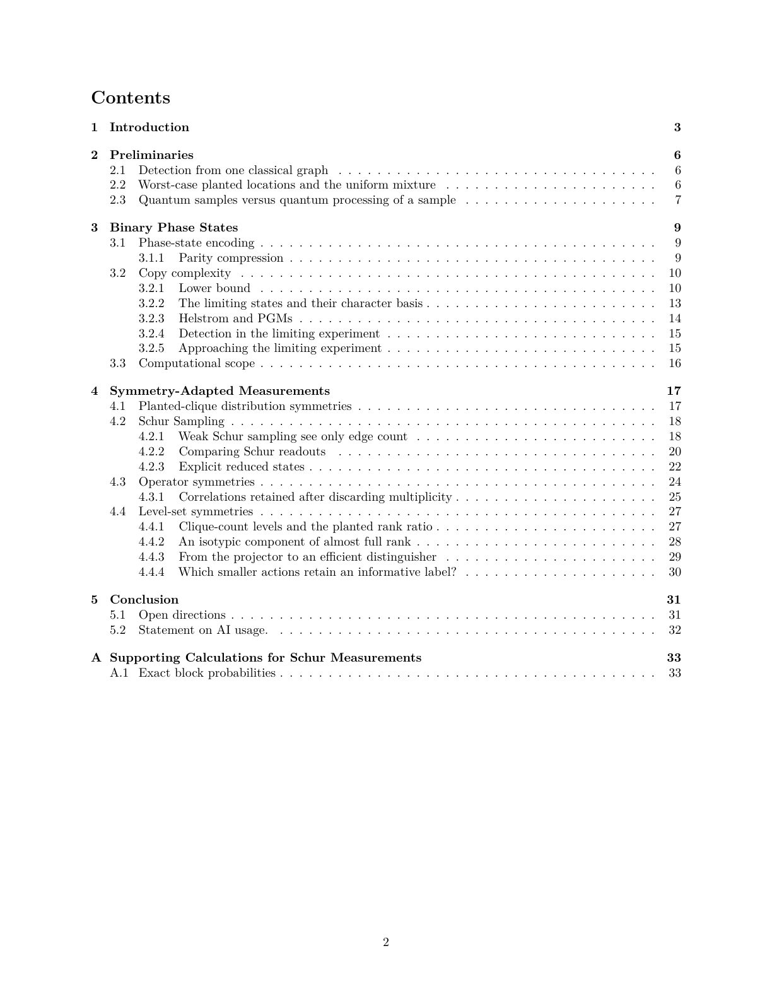
<figcaption class="paper-figure-caption"><b>Fig 1.</b> Low-resolution page preview, page 2</figcaption>
</figure>
<figure class="paper-figure-card">
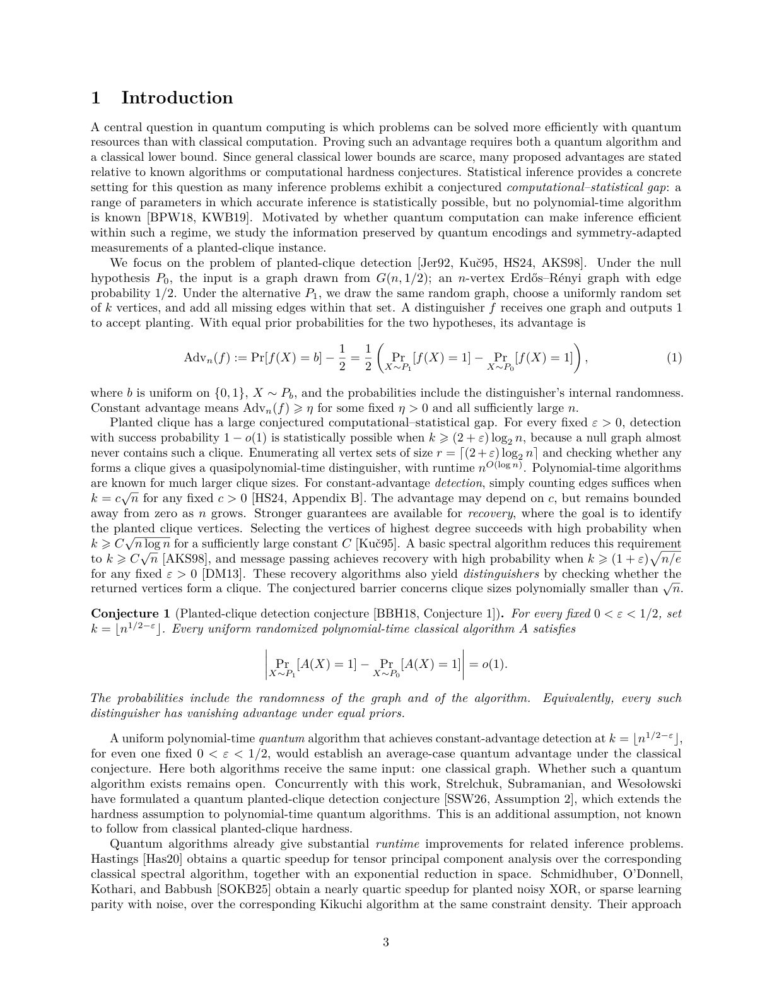
<figcaption class="paper-figure-caption"><b>Fig 2.</b> Low-resolution page preview, page 3</figcaption>
</figure>
<figure class="paper-figure-card">
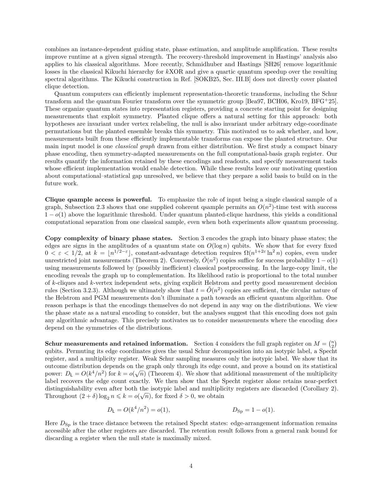
<figcaption class="paper-figure-caption"><b>Fig 3.</b> Low-resolution page preview, page 4</figcaption>
</figure>
<figure class="paper-figure-card">
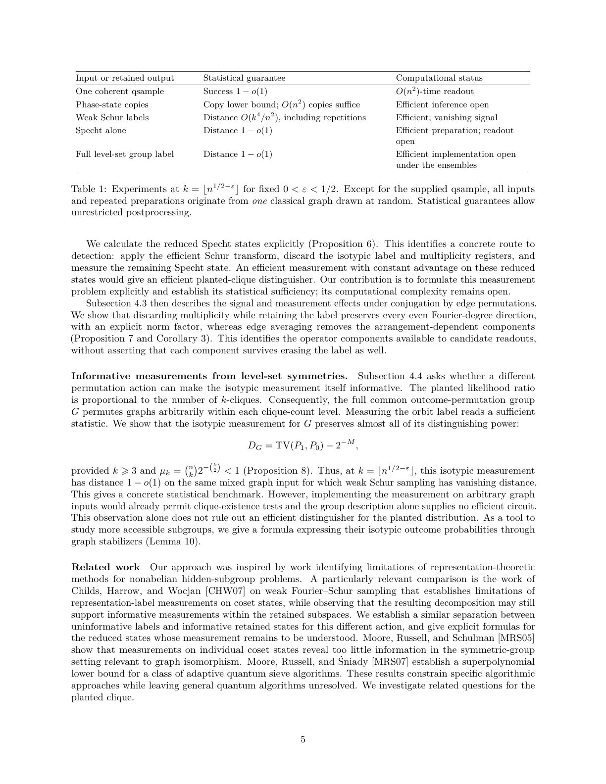
<figcaption class="paper-figure-caption"><b>Fig 4.</b> Low-resolution page preview, page 5</figcaption>
</figure>
<figure class="paper-figure-card">
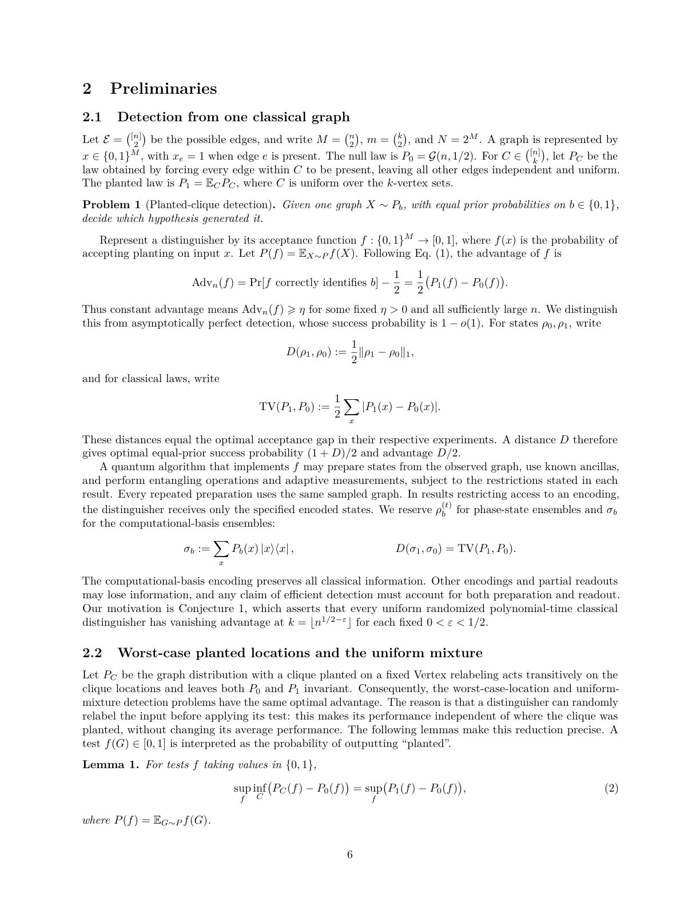
<figcaption class="paper-figure-caption"><b>Fig 5.</b> Low-resolution page preview, page 6</figcaption>
</figure>
</div>

<p><strong>Summary.</strong> This work analyzes the quantum feasibility of detecting a planted clique, a problem central to quantum advantage research. By comparing different quantum encodings, the authors demonstrate that symmetry-adapted measurements offer a highly efficient method, achieving near-perfect distinguishability using only one quantum sample. The findings are structural, highlighting the theoretical gap between current quantum capabilities and the conjectured hard classical regime.</p>
<p><strong>Why it may be interesting.</strong> It provides deep theoretical insights into the limits of quantum distinguishability for graph problems, connecting abstract concepts from representation theory to concrete quantum computational advantages.</p>
<details>
<summary>Detailed structure</summary>
<p><strong>Main problem.</strong> The paper investigates the potential for quantum advantage in solving the planted clique detection problem, which is conjectured to have a computational-statistical gap.</p>
<p><strong>Main result.</strong> The authors show that while constant-advantage detection requires a high number of quantum samples using one encoding, symmetry-adapted measurements allow for near-perfect distinguishability using only one coherent quantum sample.</p>
<p><strong>Method.</strong> The analysis relies heavily on quantum information theory, representation theory (Schur transform), and calculating distinguishability metrics (like trace distance) between quantum states representing the null and planted graph ensembles.</p>
<p><strong>Model / system.</strong> The model is the detection of a planted clique in a classical graph, which is then encoded into quantum states using binary phase states or symmetry-adapted measurements on a full graph register.</p>
<p><strong>Key observables.</strong> Distinguishability metrics (e.g., trace distance $D_{Sp}$), required number of quantum samples (copies), and the outcome probabilities derived from Schur sampling.</p>
<p><strong>Important parameters / regimes.</strong> Clique size $k$, graph size $n$, and the required number of copies for constant advantage ($\Omega(n^{1+2\epsilon}\ln^2 n)$).</p>
<p><strong>Assumptions / limitations.</strong> The results are structural and information-theoretic; the efficient detection from one classical graph in the conjectured hard regime remains an open problem.</p>
<p><strong>Figures summary.</strong> Not specified, but the notes reference a Table 1 summarizing statistical guarantees for various measurement types at a specific clique size $k = \lfloor n^{1/2-\epsilon} 
floor$.</p>
<p><strong>Paper structure.</strong> The paper progresses by analyzing two quantum encodings (binary phase state vs. symmetry-adapted measurements). It first establishes the high cost for constant advantage using phase states, then details the superior performance of Schur measurements, culminating in showing that one coherent sample allows for an efficient quantum distinguisher.</p>
</details>
<details>
<summary>Abstract</summary>
<p>The planted clique problem is a promising candidate for quantum advantage with a wide computational-statistical gap and substantial evidence for classical hardness. We study two quantum encodings of classical samples, a natural binary phase state encoding and symmetry-adapted measurements, and determine if they preserve enough information for planted-clique detection, as well as discuss their potential towards algorithmic efficiency. For the binary phase state encoding, we show that constant-advantage detection requires $Ω(n^{1+2\varepsilon}\ln^2 n)$ copies, even under arbitrary joint measurements. Measurements on $\tilde{O}(n^2)$ copies suffice statistically above the logarithmic clique threshold. The symmetry-adapted measurements on the full graph register arise naturally from the Schur transform. We show that the outcome distribution of weak Schur sampling depends on the sampled graph only through its edge count and fails to distinguish the distributions; whereas retaining the representation label and Specht register after discarding multiplicity preserves distance $1-o(1)$. Near-perfect distinguishability survives even if the label is also discarded. We calculate the retained states, providing concrete targets for efficient measurement. Finally, we show that one supplied coherent quantum sample enables an efficient quantum distinguisher, which yields a conditional computational separation from one classical sample under quantum planted-clique hardness. Our results are structural and information-theoretic; efficient detection from one classical graph in the conjectured hard regime remains open.</p>
</details>
<p><sub><a href="#top">↑ back to top</a></sub></p>

<p><a id="paper-2609.39994"></a></p>
<h3 id="quantum-state-learning-beyond-approximate-unitary-designs"><a href="http://arxiv.org/abs/2609.39994v1">Quantum state learning beyond approximate unitary designs</a></h3>
<p><strong>Authors:</strong> Gyungmin Cho, Changhun Oh, Dohun Kim<br>
<strong>Type:</strong> theory · <strong>Category:</strong> quantum information and computing · <strong>PDF:</strong> <a href="https://arxiv.org/pdf/2609.39994v1">https://arxiv.org/pdf/2609.39994v1</a><br>
<strong>Analysis basis:</strong> full PDF text, analyzed in chunks
<strong>Topic relevance:</strong> <code>quantum measurements</code> <strong>3/5</strong></p>
<div class="figure-strip-hint">↔ Scroll figures horizontally</div>
<div class="paper-figures-scroll">
<figure class="paper-figure-card">
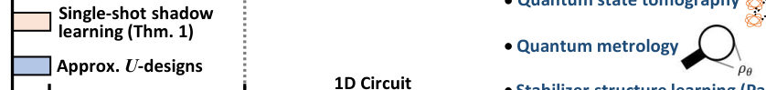
<figcaption class="paper-figure-caption"><b>Fig 1.</b> FIG. 1. Overview of the two-layer architecture and main results. (a) Two-layer block unitary ensemble consisting of two staggered layers of non-overlapping k-qubit blocks with periodic boundary conditions. (b) The approximate unitary design condition is neither sufficient nor necessary for the variance guarantee of Theorem 1, as shown by Proposition 1 and 2, respectively. (c) Circuit-depth requirements in an ancilla-free architecture. Approximate unitary designs in relative error and the variance scaling of Theorem 1 are attainable at depth O(log n) in a 1D ancilla-free architecture. For multi-shot shadow learning with circuits of independent Haar-random two-qubit gates, matching the global...</figcaption>
</figure>
<figure class="paper-figure-card">
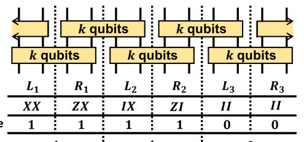
<figcaption class="paper-figure-caption"><b>Fig 2.</b> FIG. 2. Half-block decomposition of the visibility mP . The first layer acts on (Li, Ri), while the second layer acts on (Ri, Li+1). A half block has type 0 if the Pauli operator restricted to it is the identity and type 1 otherwise. The type of a first layer block is obtained by combining the types of its two half blocks. In the example shown here, the half block type word is (1, 1, 1, 1, 0, 0) and the block support word is (1, 1, 0).</figcaption>
</figure>
<figure class="paper-figure-card">
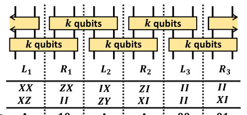
<figcaption class="paper-figure-caption"><b>Fig 3.</b> FIG. 3. Half-block decomposition used to evaluate the correlated visibility τ(P, Q). The restrictions of P and Q to each half-block Li or Ri determine its half-block type. The two half-block types within each first-layer block define the corresponding U1 type according to Eq. (C26). The staggered second layer U2 couples Ri and Li+1, with periodic boundary conditions indicated by the arrows.</figcaption>
</figure>
</div>

<p><strong>Summary.</strong> This work rigorously distinguishes between merely approximating Haar randomness and actually preserving the learning guarantees associated with that randomness. By analyzing shallow, low-depth Clifford circuits, the authors establish new, stronger bounds for quantum state estimation tasks like observable measurement and purity estimation. This highlights that the structure of the measurement circuit, rather than just moment matching, dictates the achievable performance.</p>
<p><strong>Why it may be interesting.</strong> It provides rigorous, circuit-level bounds on the performance of quantum state estimation, which is crucial for designing practical quantum hardware protocols.</p>
<details>
<summary>Detailed structure</summary>
<p><strong>Main problem.</strong> The paper investigates the limitations of using approximate unitary designs to guarantee the performance of quantum state learning protocols.</p>
<p><strong>Main result.</strong> It proves that shallow, low-depth Clifford circuits can achieve measurement variance scaling matching global Clifford bounds, demonstrating that mere approximate design matching is insufficient for learning guarantees.</p>
<p><strong>Method.</strong> The authors analyze the shadow channel and its inverse using circuit structure analysis, comparing results derived from approximate unitary designs against those derived from direct circuit properties.</p>
<p><strong>Model / system.</strong> The study focuses on quantum state learning for unknown states $\rho$ on $n$ qubits, utilizing measurements based on two-layer block unitary ensembles (Clifford circuits).</p>
<p><strong>Key observables.</strong> Observable expectation values, purity ($\text{Tr}(\rho^2)$), and the stabilizer structure of the state.</p>
<p><strong>Important parameters / regimes.</strong> Circuit depth (logarithmic vs. linear), design error ($\epsilon_{\text{des}}$), and the number of measurement shots ($N_U, N_S$).</p>
<p><strong>Assumptions / limitations.</strong> The analysis contrasts the necessary conditions for learning guarantees (derived from circuit structure) versus the sufficient conditions provided by approximate unitary designs.</p>
<p><strong>Figures summary.</strong> Figures illustrate the comparison between different measurement ensembles (e.g., Voroninski, Haar(n)) regarding the required number of samples needed to achieve certain estimation bounds.</p>
<p><strong>Paper structure.</strong> The paper progresses by first establishing the general problem of state learning, then showing that approximate design conditions are insufficient, before deriving strong, direct circuit-based bounds for single-shot estimation, and finally analyzing multi-shot limitations.</p>
</details>
<details>
<summary>Abstract</summary>
<p>Approximate unitary designs reproduce the statistics of Haar-random unitaries to a given order and accuracy. Recent constructions realize such designs with logarithmic-depth circuits, enabling shallow measurement protocols for various quantum state-learning tasks while preserving performance. These results raise the question of whether approximate designs can replace exact designs more generally. We show that even exponentially small design error need not preserve the learning guarantees of exact designs. This motivates deriving learning guarantees directly from the measurement circuit structure. For observable estimation with classical shadows, we prove that logarithmic-depth two-layer Clifford circuits yield an unbiased estimator matching the global Clifford variance scaling for every state and Hermitian observable. Beyond observable estimation, this bound allows shallow measurements to retain global Clifford guarantees for other tasks, including setting-efficient tomography, mixed-state metrology, and stabilizer structure learning. We complement these statistical guarantees with a compact, exact tensor-network representation of the inverse shadow channel. When measurement bases are reused, approximate unitary designs of arbitrarily high order need not uniformly match the Haar variance in the many-shot limit. For the all-to-all random two-local circuits considered, doing so requires nearly linear depth. Together, our results reveal the capabilities and limitations of shallow quantum state learning, highlighting the distinction between approximating Haar randomness and reproducing its learning guarantees.</p>
</details>
<p><sub><a href="#top">↑ back to top</a></sub></p>

<p><a id="paper-2609.38957"></a></p>
<h3 id="the-commuting-local-hamiltonian-problem-relativized-evidence-against-bqp-hardness"><a href="http://arxiv.org/abs/2609.38957v1">The Commuting Local Hamiltonian Problem: Relativized Evidence Against BQP-Hardness</a></h3>
<p><strong>Authors:</strong> Itay Shalit, Mark Zhandry<br>
<strong>Type:</strong> theory · <strong>Category:</strong> quantum information and computing · <strong>PDF:</strong> <a href="https://arxiv.org/pdf/2609.38957v1">https://arxiv.org/pdf/2609.38957v1</a><br>
<strong>Analysis basis:</strong> full PDF text, analyzed in chunks
<strong>Topic relevance:</strong> <code>analog quantum simulation</code> <strong>3/5</strong></p>
<div class="figure-strip-hint">↔ Scroll figures horizontally</div>
<div class="paper-figures-scroll">
<figure class="paper-figure-card">
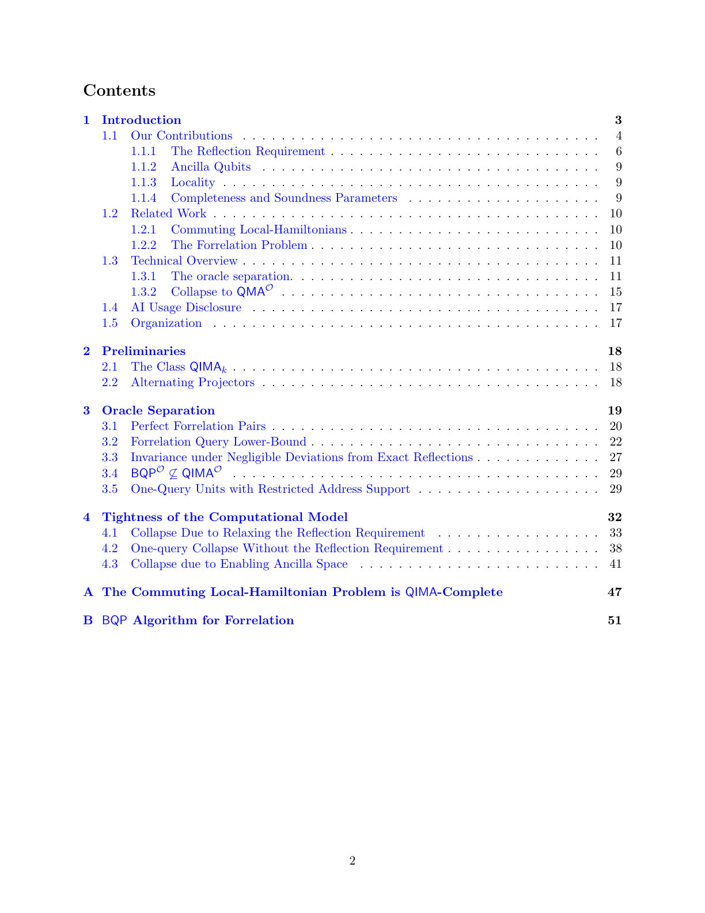
<figcaption class="paper-figure-caption"><b>Fig 1.</b> Low-resolution page preview, page 2</figcaption>
</figure>
<figure class="paper-figure-card">
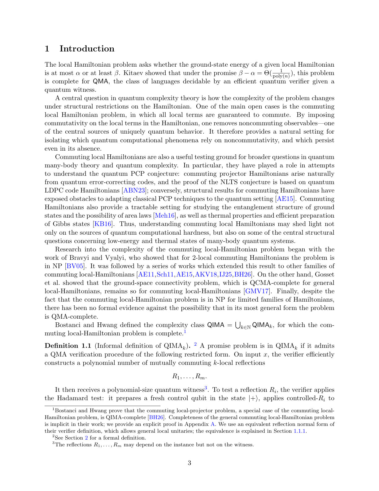
<figcaption class="paper-figure-caption"><b>Fig 2.</b> Low-resolution page preview, page 3</figcaption>
</figure>
<figure class="paper-figure-card">
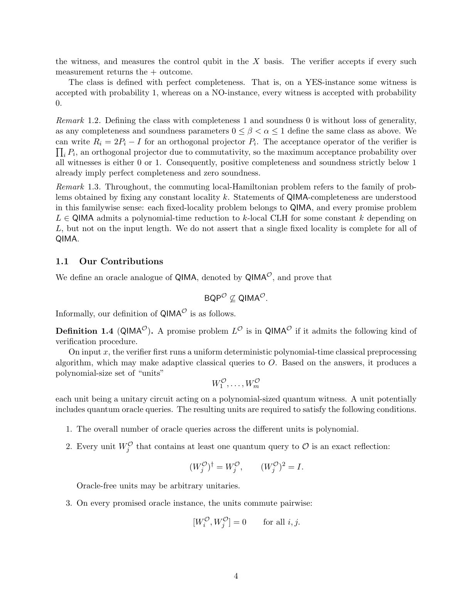
<figcaption class="paper-figure-caption"><b>Fig 3.</b> Low-resolution page preview, page 4</figcaption>
</figure>
<figure class="paper-figure-card">
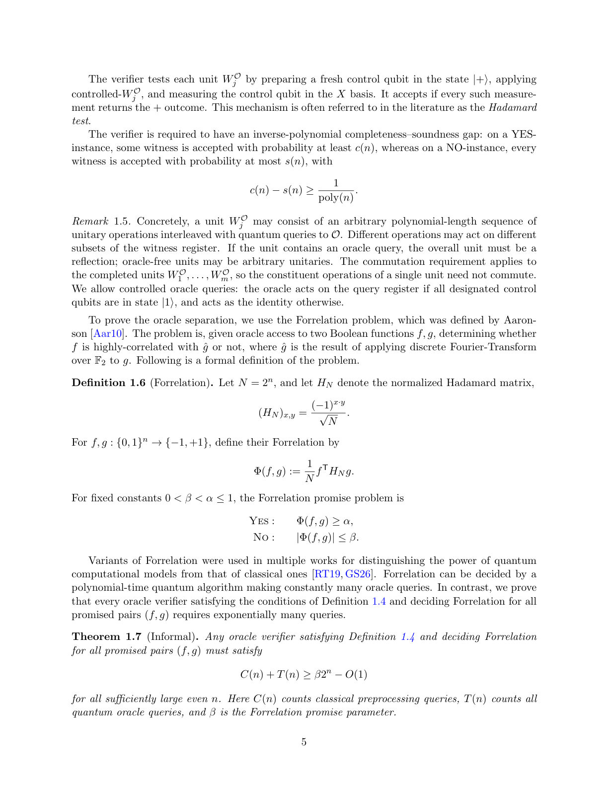
<figcaption class="paper-figure-caption"><b>Fig 4.</b> Low-resolution page preview, page 5</figcaption>
</figure>
<figure class="paper-figure-card">
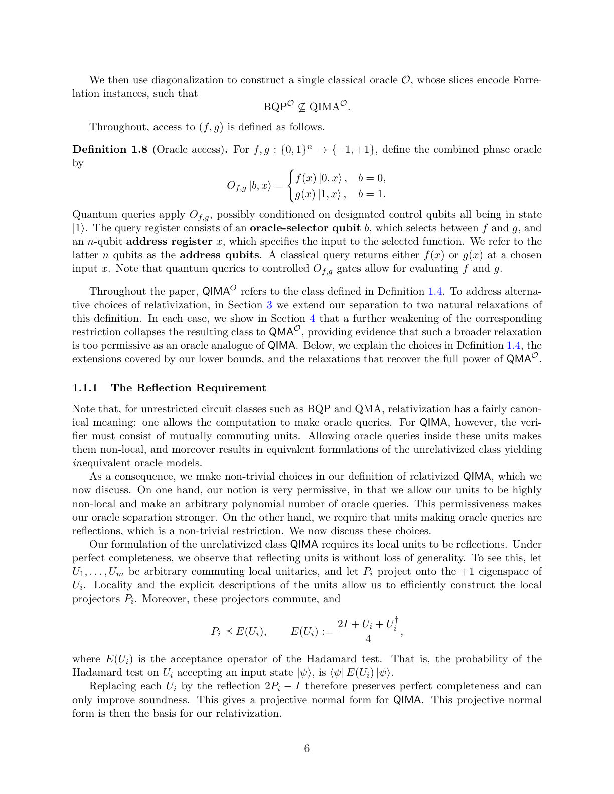
<figcaption class="paper-figure-caption"><b>Fig 5.</b> Low-resolution page preview, page 6</figcaption>
</figure>
</div>

<p><strong>Summary.</strong> This paper analyzes the computational complexity of the Commuting Local Hamiltonian (CLH) problem, showing it is complete for the class QIMA. By constructing a specific classical oracle, the authors prove a separation between $    ext{BQP}^{\mathcal{O}}$ and $   ext{QIMA}^{\mathcal{O}}$, providing strong evidence that the general CLH problem is not as hard as $    ext{QMA}$-complete.</p>
<p><strong>Why it may be interesting.</strong> The work directly addresses the computational hardness of quantum many-body problems (like finding ground states), which is central to quantum simulation and quantum computation theory.</p>
<details>
<summary>Detailed structure</summary>
<p><strong>Main problem.</strong> The paper investigates the computational complexity of the Commuting Local Hamiltonian (CLH) problem, a restriction of the local-Hamiltonian problem where Hamiltonian terms must pairwise commute.</p>
<p><strong>Main result.</strong> The authors provide relativized evidence against the possibility that the general CLH problem is BQP-hard or QMA-complete by constructing an oracle separation ($  ext{BQP}^{\mathcal{O}}
ot\subseteq ext{QIMA}^{\mathcal{O}}$).</p>
<p><strong>Method.</strong> The proof involves constructing a classical oracle $\mathcal{O}$ and utilizing the Forrelation problem to demonstrate that the complexity class $ ext{QIMA}^{\mathcal{O}}$ is strictly different from $   ext{QMA}^{\mathcal{O}}$.</p>
<p><strong>Model / system.</strong> The analysis is framed within quantum complexity theory, comparing the CLH problem (complete for $  ext{QIMA}$) against $   ext{QMA}$ and $ ext{BQP}$ using oracle constructions.</p>
<p><strong>Key observables.</strong> The minimum eigenvalue ($\lambda_{\min}$) of the constructed commuting local Hamiltonian, which must be distinguished between $\le \alpha$ (YES) and $\ge eta$ (NO).</p>
<p><strong>Important parameters / regimes.</strong> The promise gap ($eta - \alpha \ge 1/	ext{poly}(n)$) and the locality parameter $k$ of the Hamiltonian.</p>
<p><strong>Assumptions / limitations.</strong> The primary assumption is the formal definition of $ ext{QIMA}$ and its oracle analogue $    ext{QIMA}^{\mathcal{O}}$, which relies on commuting local gates.</p>
<p><strong>Paper structure.</strong> The paper first establishes the $  ext{QIMA}$-completeness of the CLH problem, then introduces the oracle model $  ext{QIMA}^{\mathcal{O}}$, and finally uses the Forrelation problem and diagonalization techniques to prove the separation $ ext{BQP}^{\mathcal{O}}
ot\subseteq ext{QIMA}^{\mathcal{O}}$.</p>
</details>
<details>
<summary>Abstract</summary>
<p>The commuting local-Hamiltonian (CLH) problem is a restriction of the local-Hamiltonian problem, in which the terms of the Hamiltonian are required to pairwise commute. A long line of work has shown that the problem lies in $\mathsf{NP}$ for certain families of commuting local Hamiltonians. Nevertheless, there has been no formal evidence against the possibility that the general CLH problem is $\mathsf{QMA}$-complete.   CLH is complete for the complexity class $\mathsf{QIMA}$, defined through quantum verifiers whose local gates commute. Therefore, CLH is $\mathsf{QMA}$-complete if and only if $\mathsf{QIMA}=\mathsf{QMA}$. In this work, we introduce a classical-oracle analogue $\mathsf{QIMA}^{\mathcal{O}}$ and construct a classical oracle $\mathcal{O}$ such that $\mathsf{BQP}^{\mathcal{O}}\not\subseteq\mathsf{QIMA}^{\mathcal{O}}$.   Since $\mathsf{BQP}^{\mathcal{O}}\subseteq\mathsf{QMA}^{\mathcal{O}}$ for any classical oracle $\mathcal{O}$, this implies $\mathsf{QIMA}^{\mathcal{O}}\neq\mathsf{QMA}^{\mathcal{O}}$ for our constructed oracle. Thus, our result provides relativized evidence against the possibility that the general commuting local-Hamiltonian problem is $\mathsf{BQP}$-hard, and hence also against the possibility that it is $\mathsf{QMA}$-complete.</p>
</details>
<p><sub><a href="#top">↑ back to top</a></sub></p>

<p><a id="paper-2609.39192"></a></p>
<h3 id="the-twisted-convolution-identity-and-ghost-math935math-sics-from-finite-quantum-dilogarithms"><a href="http://arxiv.org/abs/2609.39192v1">The twisted convolution identity and ghost $r$-SICs from finite quantum dilogarithms</a></h3>
<p><strong>Authors:</strong> Marcus Appleby, Steven T. Flammia, Gene S. Kopp<br>
<strong>Type:</strong> theory · <strong>Category:</strong> other · <strong>PDF:</strong> <a href="https://arxiv.org/pdf/2609.39192v1">https://arxiv.org/pdf/2609.39192v1</a><br>
<strong>Analysis basis:</strong> full PDF text, analyzed in chunks
<strong>Topic relevance:</strong> <code>quantum measurements</code> <strong>3/5</strong></p>
<div class="figure-strip-hint">↔ Scroll figures horizontally</div>
<div class="paper-figures-scroll">
<figure class="paper-figure-card">
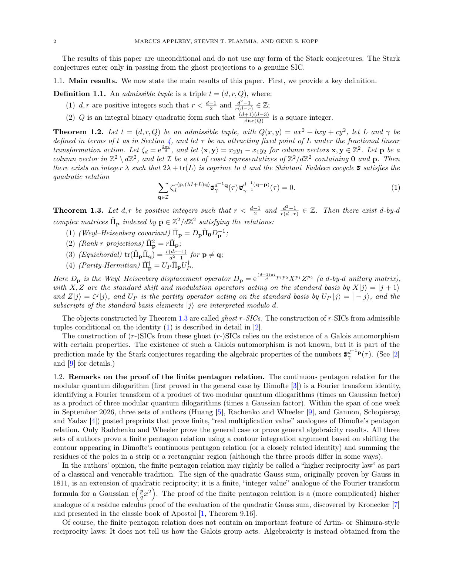
<figcaption class="paper-figure-caption"><b>Fig 1.</b> Low-resolution page preview, page 2</figcaption>
</figure>
<figure class="paper-figure-card">
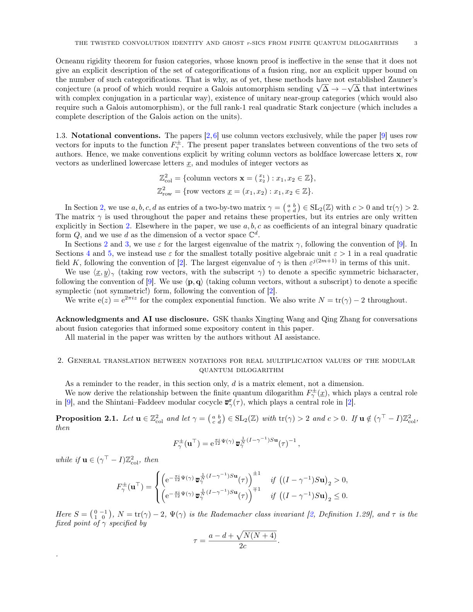
<figcaption class="paper-figure-caption"><b>Fig 2.</b> Low-resolution page preview, page 3</figcaption>
</figure>
<figure class="paper-figure-card">
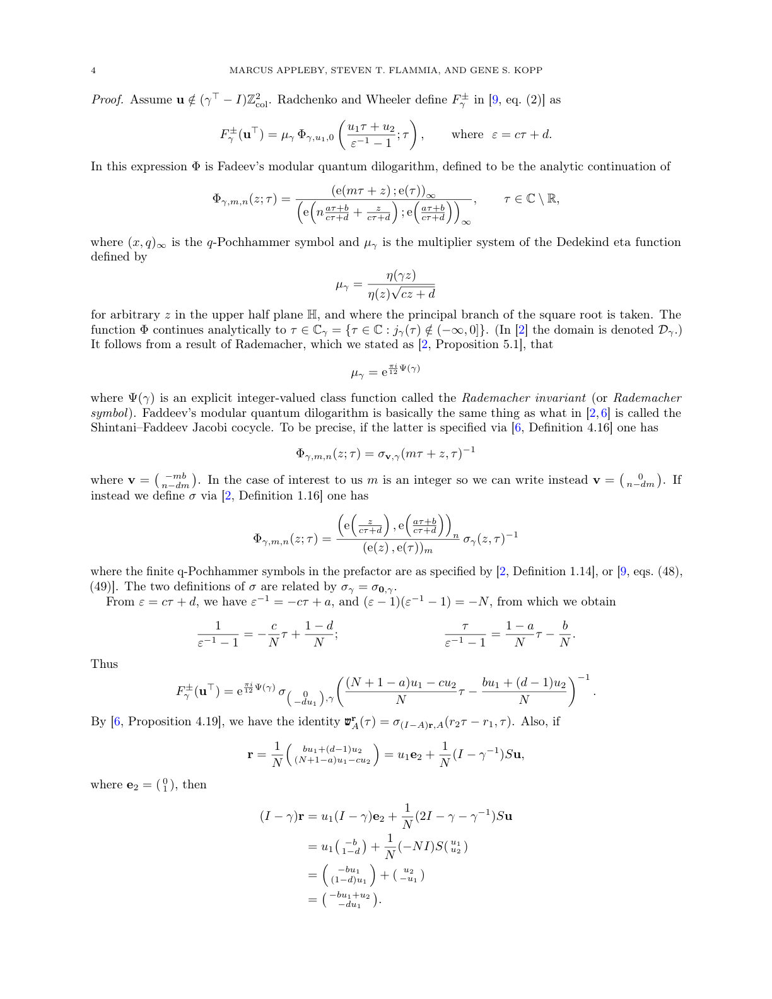
<figcaption class="paper-figure-caption"><b>Fig 3.</b> Low-resolution page preview, page 4</figcaption>
</figure>
<figure class="paper-figure-card">
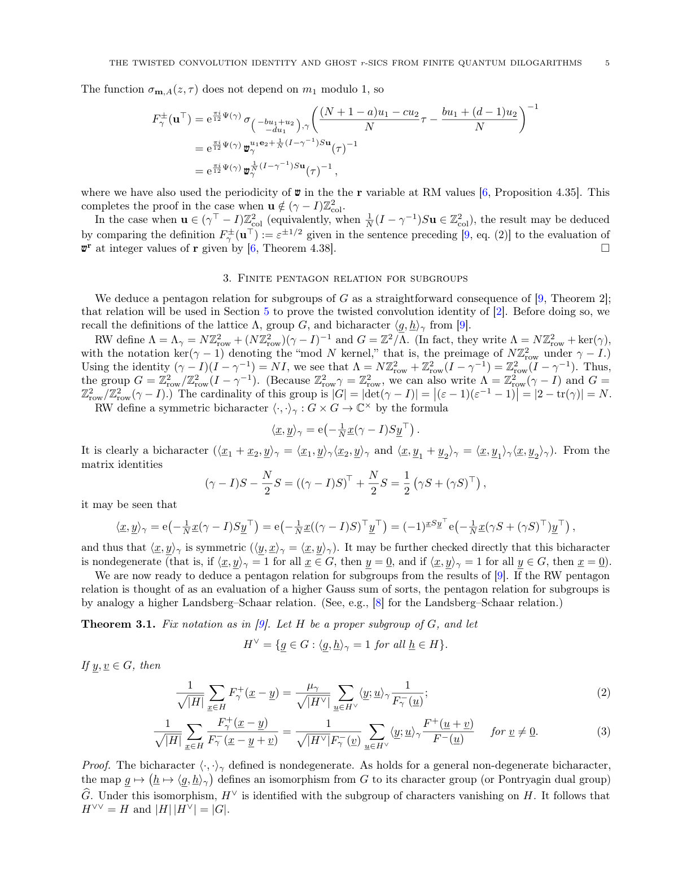
<figcaption class="paper-figure-caption"><b>Fig 4.</b> Low-resolution page preview, page 5</figcaption>
</figure>
<figure class="paper-figure-card">
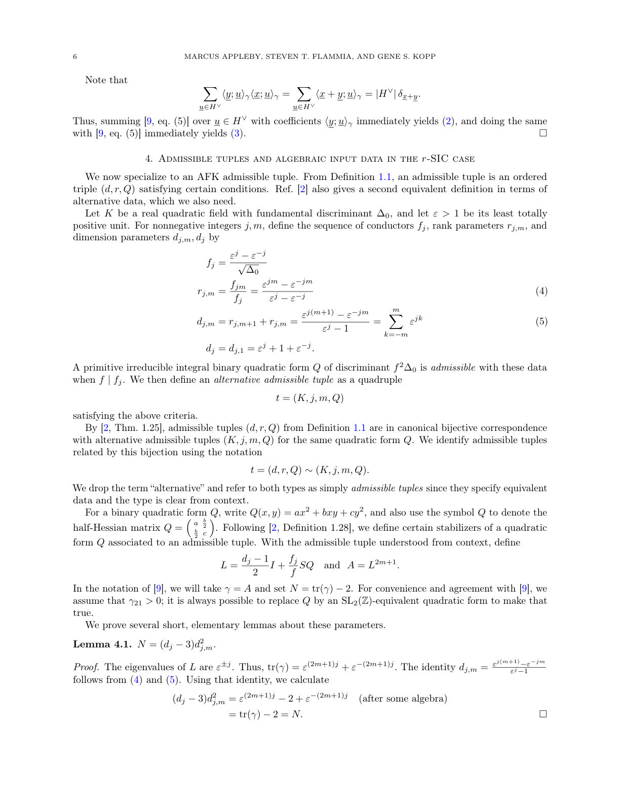
<figcaption class="paper-figure-caption"><b>Fig 5.</b> Low-resolution page preview, page 6</figcaption>
</figure>
</div>

<p><strong>Summary.</strong> This theoretical paper proves a generalized twisted convolution identity and establishes the existence of 'ghost r-SICs' using advanced techniques involving the modular quantum dilogarithm. It connects abstract algebraic identities derived from modular forms to concrete structures in quantum information theory, particularly concerning optimal quantum measurements.</p>
<p><strong>Why it may be interesting.</strong> The deep connection between number theory (modular forms, dilogarithms) and quantum information structures (SIC-POVMs) suggests underlying mathematical symmetries governing quantum measurement theory.</p>
<details>
<summary>Detailed structure</summary>
<p><strong>Main problem.</strong> The paper aims to establish the twisted convolution identity (TCI) and prove the existence of 'ghost r-SICs' (configurations of subspaces satisfying a non-Hermitian equichordal condition).</p>
<p><strong>Main result.</strong> The authors establish the TCI for specific parameters and prove the existence of ghost r-SICs for any admissible tuple, with genuine r-SICs being conditional on the Stark conjectures.</p>
<p><strong>Method.</strong> The proof extends a known pentagon relation from rank-1 to general rank-r tuples, utilizing character theory and explicit dictionaries between modular quantum dilogarithm conventions.</p>
<p><strong>Model / system.</strong> The theory is rooted in the modular quantum dilogarithm and its relation to the Shintani-Faddeev modular cocycle. The physical manifestation involves configurations of rank-r subspaces in $\mathbb{C}^d$, relevant to quantum information theory (SIC-POVMs).</p>
<p><strong>Key observables.</strong> The existence of ghost r-SICs ($\tilde{\Pi}_p$), the twisted convolution identity (Equation 7), and the modular quantum dilogarithm values.</p>
<p><strong>Important parameters / regimes.</strong> Admissible tuples $(d, r, Q)$ satisfying $r < \frac{d-1}{2}$ and $\frac{d^2-1}{r(d-r)} \in \mathbb{Z}$.</p>
<p><strong>Assumptions / limitations.</strong> The derivation of genuine r-SICs from ghost r-SICs relies on the unproven Stark conjectures regarding the action of the Galois group.</p>
<p><strong>Paper structure.</strong> The paper builds by first establishing relationships between the quantum dilogarithm and the modular cocycle (Prop 2.1), proving a pentagon relation for subgroups (Thm 3.1), and finally deriving the TCI (Thm 1.2) which leads to the existence proof for ghost r-SICs (Thm 1.3).</p>
</details>
<details>
<summary>Abstract</summary>
<p>Radchenko and Wheeler (RW) recently proved a finite pentagon relation for real quadratic special values of the modular quantum dilogarithm and used it to establish the rank-$1$ twisted convolution identity conjectured by the current authors. RW gave an explicit argument in the principal case and remarked that their proof holds for all rank-$1$ admissible tuples. We extend their proof to all rank-$r$ admissible tuples and provide an explicit dictionary between the modular quantum dilogarithm and the Shintani-Faddeev modular cocycle conventions in the respective papers. Thus, we establish that, if $d,r$ are positive integers such that $r<\frac{d-1}{2}$ and $\frac{d^2-1}{r(d-r)} \in \mathbb{Z}$, then there exist ghost $r$-SICs: i.e., configurations of $d^2$ rank-$r$ subspaces in $\mathbb{C}^d$ that satisfy a non-Hermitian equichordal condition. Under the Stark conjecture, these configurations are Galois conjugate to Hermitian equichordal configurations called $r$-SICs (or rank-$r$ SIC-POVMs).</p>
</details>
<p><sub><a href="#top">↑ back to top</a></sub></p>

<p><a id="paper-2609.38633"></a></p>
<h3 id="towards-noble-gas-quantum-optical-magnetometry-using-direct-ultraviolet-detection"><a href="http://arxiv.org/abs/2609.38633v1">Towards noble gas quantum optical magnetometry using direct ultraviolet detection</a></h3>
<p><strong>Authors:</strong> James Maldaner, Gil Porat<br>
<strong>Type:</strong> theory · <strong>Category:</strong> other · <strong>PDF:</strong> <a href="https://arxiv.org/pdf/2609.38633v1">https://arxiv.org/pdf/2609.38633v1</a><br>
<strong>Analysis basis:</strong> full PDF text, analyzed in chunks
<strong>Topic relevance:</strong> <code>quantum measurements</code> <strong>3/5</strong></p>
<div class="figure-strip-hint">↔ Scroll figures horizontally</div>
<div class="paper-figures-scroll">
<figure class="paper-figure-card">
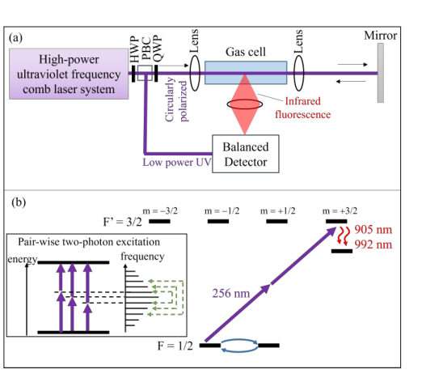
<figcaption class="paper-figure-caption"><b>Fig 1.</b> FIG. 1. (a) Proposed experiment schematic for the DF mag- netometry scenario. (b) Partial energy level diagram of 129Xe and its proposed interaction with the laser. The inset illus- trates the concept of pairwise two-photon excitation with a frequency comb.</figcaption>
</figure>
<figure class="paper-figure-card">
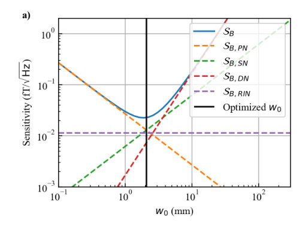
<figcaption class="paper-figure-caption"><b>Fig 2.</b> FIG. 2. An example of beam size optimization, where Rf = −100 dBc/Hz, Pe = 10 W, and Tm = 10 min. The dashed lines show dependence on beam size of the sensitivity due to projection noise (orange), shot noise (green), detector noise (red), and RIN (purple). The blue solid line shows how the total sensitivity changes as a function of the beam waist, ex- hibiting a clear minimum. The corresponding optimal beam size is indicated with the black solid line.</figcaption>
</figure>
<figure class="paper-figure-card">
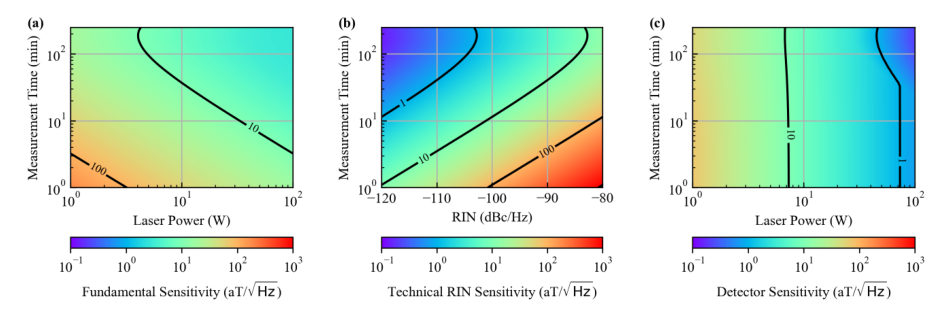
<figcaption class="paper-figure-caption"><b>Fig 3.</b> FIG. 3. Contour plots showing each type of noise contribution to the sensitivity. In all plots the color map has the same range with the order of magnitude levels marked in black for increased clarity. a) Sensitivity due to fundamental noise, i.e., shot and projection noise. b) Sensitivity due to laser technical RIN. c) Sensitivity due to detector noise.</figcaption>
</figure>
<figure class="paper-figure-card">
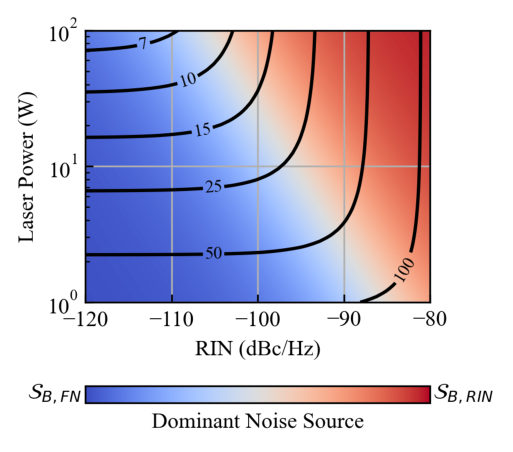
<figcaption class="paper-figure-caption"><b>Fig 4.</b> FIG. 5. The color plot shows the dominant noise source vs. laser power and technical RIN, as defined by D in Eq. 32. D &lt; 0 values show that fundamental noise dominates (in blue), and D &gt; 0 values show that RIN dominates (in red). The black contour lines are the same as those in Figure 4, for reference.</figcaption>
</figure>
<figure class="paper-figure-card">
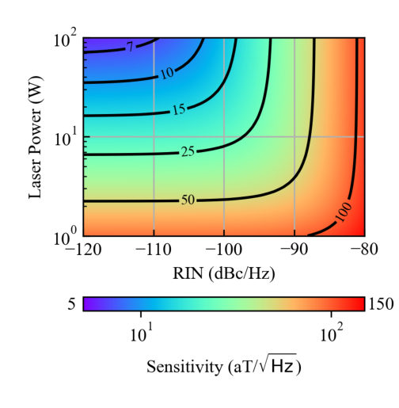
<figcaption class="paper-figure-caption"><b>Fig 5.</b> FIG. 4. Contour plot showing the effect of laser power and technical RIN on sensitivity with a measurement time of 10 minutes. Note that the color map in this plot has a different scale than those in Figure 3.</figcaption>
</figure>
</div>

<p><strong>Summary.</strong> This paper proposes a novel quantum optical magnetometry technique using noble gas atoms, specifically ${}^{129}	ext{Xe}$, detected via direct ultraviolet laser excitation. By eliminating the need for alkali vapors, it promises long coherence times at room temperature. Theoretical analysis predicts record-breaking magnetic field sensitivities by optimizing laser power and noise suppression techniques.</p>
<p><strong>Why it may be interesting.</strong> This work directly applies quantum optics and atomic physics principles to build a next-generation sensor, providing quantitative predictions for performance limits based on fundamental noise sources like laser intensity noise.</p>
<details>
<summary>Detailed structure</summary>
<p><strong>Main problem.</strong> Developing a highly sensitive and precise quantum magnetic sensing technique using noble gas atoms.</p>
<p><strong>Main result.</strong> A record-breaking sensitivity of 24 aT/sqrt(Hz) is predicted, achievable with high laser power and low relative intensity noise.</p>
<p><strong>Method.</strong> The technique involves monitoring the oscillation of fluorescence power in ${}^{129}	ext{Xe}$ due to Larmor precession, read out using a balanced detector scheme.</p>
<p><strong>Model / system.</strong> The system uses noble gas atoms, specifically ${}^{129}	ext{Xe}$, whose nuclear spin precession is optically detected via a two-photon transition using a UV frequency comb laser. This method avoids mixing alkali vapors, allowing for long spin relaxation times at room temperature.</p>
<p><strong>Key observables.</strong> Fluorescence power oscillation amplitude, Larmor frequency ($\omega_B$), and magnetic field strength ($B$).</p>
<p><strong>Important parameters / regimes.</strong> High laser power (10 W), low relative intensity noise ($-100 	ext{ dBc}/	ext{Hz}$), and the spin relaxation time ($T_2$).</p>
<p><strong>Assumptions / limitations.</strong> The initial spin polarization must be created externally, and the two-photon transition is used only for reading out precession, not for pumping.</p>
<p><strong>Figures summary.</strong> Figure 1 illustrates the proposed experiment schematic for Doppler-free magnetometry, and Figure 1(b) shows the energy level diagram of ${}^{129}	ext{Xe}$ detailing the two-photon transition and magnetic field interaction.</p>
<p><strong>Paper structure.</strong> The paper analyzes the quantum sensing mechanism, derives the signal model based on decaying sinusoids, and performs a detailed noise analysis to determine the optimal experimental parameters for achieving maximum sensitivity.</p>
</details>
<details>
<summary>Abstract</summary>
<p>We analyze a novel approach for quantum magnetic sensing via optical detection of nuclear spin precession in a noble gas. The detection is carried out with an ultraviolet frequency comb laser, so no alkali vapor is required to be mixed with the noble gas during the sensing stage, allowing for hours-long spin relaxation time at room temperature. Our analysis reveals that combining high laser power and low laser intensity noise is crucial to achieving and exceeding state-of-the-art magnetometric performance, including that of cryogenic magnetometers. We find operational regimes where either fundamental or technical noise dominate, which directs experimental effort towards increasing laser power or lowering laser intensity noise, respectively. We also show that optimizing beam size is key to achieving optimal sensitivity. Our calculations predict that a record-breaking sensitivity of $24~\mathrm{aT}/\sqrt{\mathrm{Hz}}$ is achievable in 10 minutes with a 10 W ultraviolet laser with a relative intensity noise of -100 dBc/Hz.</p>
</details>
<p><sub><a href="#top">↑ back to top</a></sub></p>

<p><a id="paper-2609.40264"></a></p>
<h3 id="two-stage-quantum-classical-distribution-network-reconfiguration-via-cycle-edge-encoding"><a href="http://arxiv.org/abs/2609.40264v1">Two-Stage Quantum-Classical Distribution Network Reconfiguration via Cycle-Edge Encoding</a></h3>
<p><strong>Authors:</strong> Nowar Alashkar, Cade Kennedy, Phillip C. Lotshaw, Shaked Regev, Miguel Angel Lopez-Ruiz, Ananth Kaushik, Paul Smith, Claudio Girotto, Martin Roetteler<br>
<strong>Type:</strong> both · <strong>Category:</strong> quantum information and computing · <strong>PDF:</strong> <a href="https://arxiv.org/pdf/2609.40264v1">https://arxiv.org/pdf/2609.40264v1</a><br>
<strong>Analysis basis:</strong> full PDF text, analyzed in chunks
<strong>Topic relevance:</strong> <code>QC/QI experiment</code> <strong>3/5</strong></p>
<div class="figure-strip-hint">↔ Scroll figures horizontally</div>
<div class="paper-figures-scroll">
<figure class="paper-figure-card">
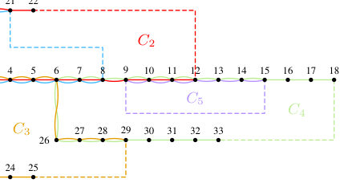
<figcaption class="paper-figure-caption"><b>Fig 1.</b> Fig. 1. Illustration of a fundamental-cycle basis for the 33-bus network. Solid connections are edges of the reference spanning tree, while dashed connections are open tie lines whose addition forms the cycles C1, . . . , C5. Multiple colored curves along the same edge indicate that it belongs to more than one cycle; they do not represent additional physical lines.</figcaption>
</figure>
<figure class="paper-figure-card">
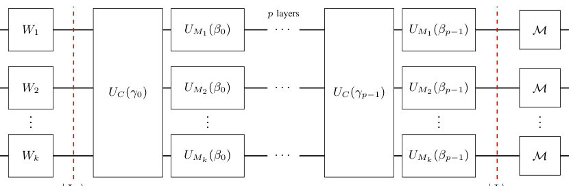
<figcaption class="paper-figure-caption"><b>Fig 2.</b> Fig. 2. Block-level LR-QAOA circuit. The initial state |Ψ0⟩is prepared by applying Wi to the register associated with each partition block C′ i. Each of the p LR-QAOA layers consists of a cost unitary UC followed by partition-block mixers UMi. The mixers act independently on each register to preserve the partition constraint in Eq. (8). The final state |Ψ⟩is measured in the computational basis.</figcaption>
</figure>
<figure class="paper-figure-card">
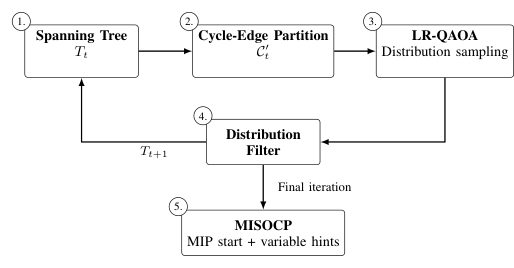
<figcaption class="paper-figure-caption"><b>Fig 3.</b> Fig. 3. High level overview of the two-stage quantum-classical workflow. Starting from the current spanning-tree configuration Tt, a fundamental- cycle basis is constructed and converted into the cycle-edge partition C′ t which ultimately defines the LR-QAOA search space. The resulting sample distribution is filtered for feasibility and ranked using the quadratic surrogate, with the top-ranked candidates being evaluated by BFS PF to obtain Tt+1. After the final iteration the sampled information is passed to the MISOCP formulation as a MIP start and variable hints.</figcaption>
</figure>
<figure class="paper-figure-card">
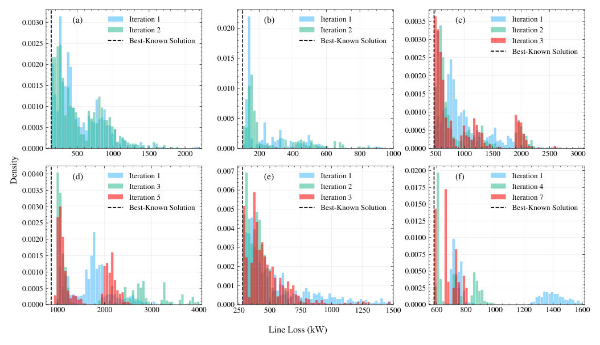
<figcaption class="paper-figure-caption"><b>Fig 4.</b> Fig. 4. Line-loss distributions of DNR-feasible samples obtained from LR-QAOA simulation for the six distribution-network test systems: (a) 33-bus, (b) 69-bus, (c) 85-bus, (d) 118-bus, (e) 136-bus, and (f) 417-bus. Each panel shows the distributions obtained at selected iterations of the iterative LR-QAOA procedure, with the dashed vertical line indicating the best-known solution for the corresponding system. Each LR-QAOA circuit used p = 2 layers and 1000 shots. Across the test networks, later iterations generally yield more samples in the lower-loss range, illustrating the progression of the iterative LR-QAOA procedure.</figcaption>
</figure>
<figure class="paper-figure-card">
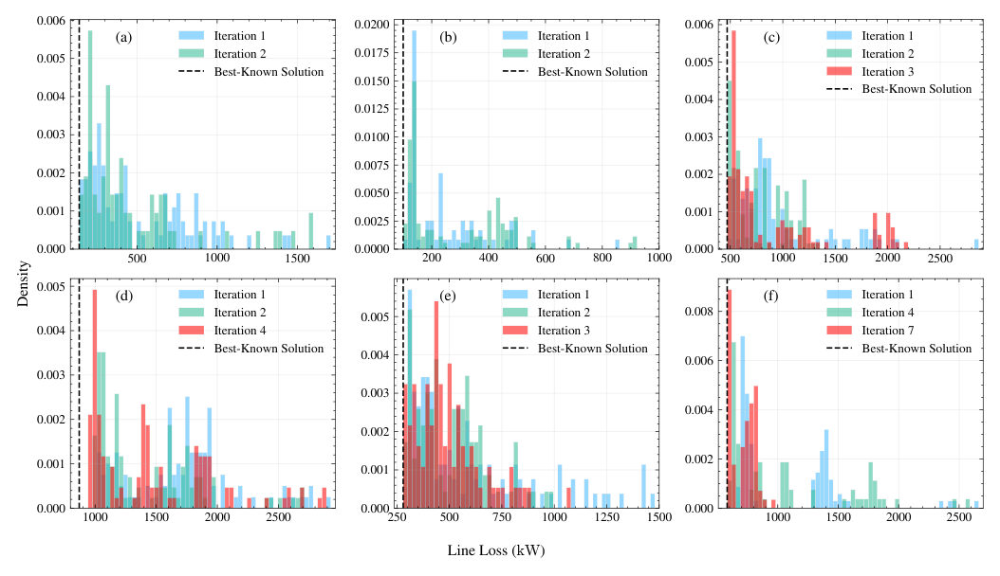
<figcaption class="paper-figure-caption"><b>Fig 5.</b> Fig. 5. Line-loss distributions of DNR-feasible samples obtained from LR-QAOA execution on the IonQ Forte Enterprise QPU for the six distribution-network test systems: (a) 33-bus, (b) 69-bus, (c) 85-bus, (d) 118-bus, (e) 136-bus, and (f) 417-bus. Each panel shows the distributions obtained at selected iterations of the iterative LR-QAOA procedure, with the dashed vertical line indicating the best-known solution for the corresponding system. Each LR-QAOA circuit used p = 2 layers and 1000 shots.</figcaption>
</figure>
</div>

<p><strong>Summary.</strong> This work proposes a novel two-stage quantum-classical method to solve the difficult problem of optimizing power distribution network topology. It uses an LR-QAOA algorithm, constrained by a cycle-edge encoding, to sample promising network configurations, which then guide a classical optimization solver. The approach shows promise by significantly speeding up convergence on large test networks.</p>
<p><strong>Why it may be interesting.</strong> The integration of graph theory constraints (spanning trees) into a quantum optimization framework, coupled with the use of trapped-ion hardware for implementation, provides a concrete example of applying quantum computation to a complex, real-world engineering optimization problem.</p>
<details>
<summary>Detailed structure</summary>
<p><strong>Main problem.</strong> The paper addresses the combinatorial optimization problem of Distribution Network Reconfiguration (DNR) to find a low-loss network topology.</p>
<p><strong>Main result.</strong> The quantum-guided classical solver significantly reduces the median solver time compared to unguided methods, especially for larger networks, although quantum overhead limits end-to-end speedup on tested systems.</p>
<p><strong>Method.</strong> A two-stage quantum-classical approach is used: Stage 1 employs an iterative LR-QAOA using a novel cycle-edge encoding to sample feasible spanning-tree subspaces; Stage 2 guides a MISOCP solver with these samples.</p>
<p><strong>Model / system.</strong> The problem is modeled on electrical power distribution networks, constrained by topological requirements (spanning trees). The quantum computation is implemented on a trapped-ion quantum hardware platform.</p>
<p><strong>Key observables.</strong> Active power losses (minimized objective function), solver time (guided vs. unguided), and the quality of the resulting network topology.</p>
<p><strong>Important parameters / regimes.</strong> The qubit budget (fixed at 29 qubits for testing), the size of the distribution network (33 to 417 buses), and the QAOA circuit parameters ($eta_j, \gamma_j$).</p>
<p><strong>Assumptions / limitations.</strong> The method assumes that the quantum sampling can effectively guide the classical solver, and the comparison is an empirical trend, not an asymptotic scaling claim.</p>
<p><strong>Figures summary.</strong> Figures illustrate the cycle-edge basis for the 33-bus network, the LR-QAOA circuit structure, and comparisons of solver runtimes and line-loss trajectories for different network sizes.</p>
<p><strong>Paper structure.</strong> The paper introduces DNR as an MISOCP problem, proposes the cycle-edge encoding to restrict the search space to spanning trees, details the LR-QAOA quantum sampling stage, and concludes by evaluating the full two-stage quantum-classical workflow against unguided classical solvers.</p>
</details>
<details>
<summary>Abstract</summary>
<p>Distribution network reconfiguration (DNR) is a combinatorial optimization problem that seeks a low-loss network topology subject to topological and electrical operating constraints. In this work, we propose a two-stage quantum-classical method for DNR. First, an iterative linear-ramp Quantum Alternating Operator Ansatz (LR-QAOA) searches topologically feasible subspaces constructed using a novel cycle-edge encoding. The encoding guarantees that every represented configuration is a spanning tree while allowing the size and coverage of each subspace to be adjusted to the available qubit budget. Second, the resulting sample distribution is used to guide a mixed-integer second-order-cone programming (MISOCP) solver. The method is evaluated on six distribution networks ranging from 33 to 417 buses through simulation and execution on trapped-ion quantum hardware. Across all six test systems, the MISOCP solver guided by hardware-derived distributions reaches an incumbent within 1\% of the best-known solution in less median solver time than the corresponding unguided solver.</p>
</details>
<p><sub><a href="#top">↑ back to top</a></sub></p>

<p><a id="paper-2609.39303"></a></p>
<h3 id="varying-a-site-radius-and-size-disorder-to-tune-magnetic-ordering-in-compositionally-complex-perovskite-oxides"><a href="http://arxiv.org/abs/2609.39303v1">Varying A-site radius and size disorder to tune magnetic ordering in compositionally complex perovskite oxides</a></h3>
<p><strong>Authors:</strong> Madeleine Geers, Ravi Kiran Dokala, Roland Mathieu, Rebecca Clulow<br>
<strong>Type:</strong> experiment · <strong>Category:</strong> strongly correlated electrons · <strong>PDF:</strong> <a href="https://arxiv.org/pdf/2609.39303v1">https://arxiv.org/pdf/2609.39303v1</a><br>
<strong>Analysis basis:</strong> full PDF text, analyzed in chunks
<strong>Topic relevance:</strong> <code>analog quantum simulation</code> <strong>3/5</strong></p>
<div class="figure-strip-hint">↔ Scroll figures horizontally</div>
<div class="paper-figures-scroll">
<figure class="paper-figure-card">
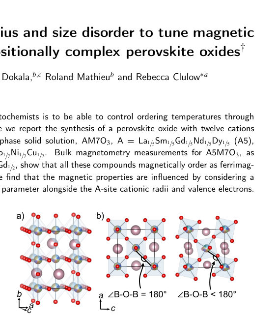
<figcaption class="paper-figure-caption"><b>Fig 1.</b> Fig. 1 Structure of an undistorted perovskite. ABO3, A = pink, B = multicoloured, O = red. b) The B-O-B angle in an undistorted perovskite (left, t = 1), and one with a smaller A-site cation (right, t &lt; 1), where rotation of the octahedra and displacements of the A-site usually occurs.</figcaption>
</figure>
<figure class="paper-figure-card">
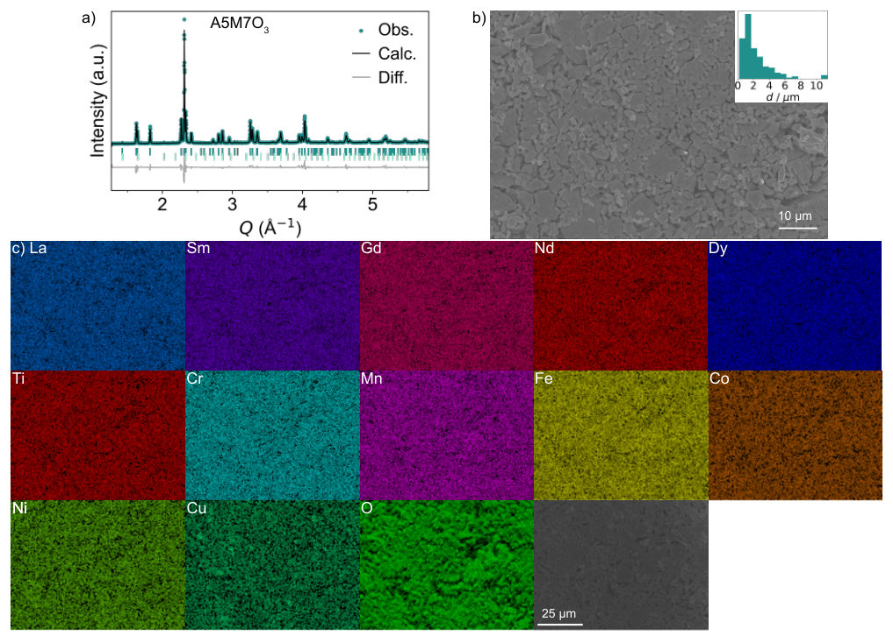
<figcaption class="paper-figure-caption"><b>Fig 2.</b> Fig. 2 Structural characterisation of A5M7O3. a) The Rietveld refinement results from powder X-ray diffraction data with Pnma symmetry (dark teal tick marks) and Gd2O3 impurity phase (0.22 weight %, light teal), Rwp = 6.7 %. b) SEM image. c) Elemental distribution of the constituent elements from EDS mapping.</figcaption>
</figure>
<figure class="paper-figure-card">
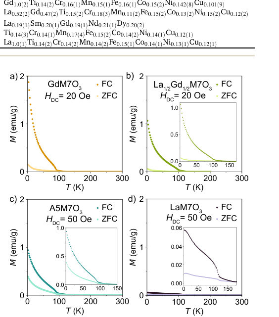
<figcaption class="paper-figure-caption"><b>Fig 3.</b> Fig. 3 Temperature dependent magnetisation under zero-field- cooled (ZFC) and field-cooled (FC) protocols for a) GdM7O3, b) La1/2Gd1/2M7O3, c) A5M7O3 and d) LaM7O3. ZFC and FC measure- ments were performed under applied magnetic fields of 20 or 50 Oe.</figcaption>
</figure>
<figure class="paper-figure-card">
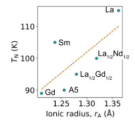
<figcaption class="paper-figure-caption"><b>Fig 4.</b> Fig. 5 The magnetic ordering temperature (TN) as a function of aver- age A-site ionic radius (rA). Values for SmM7O3 and La1/2Nd1/2M7O3 obtained from literature. 13,26 The dashed line is a guide to the eye.</figcaption>
</figure>
<figure class="paper-figure-card">
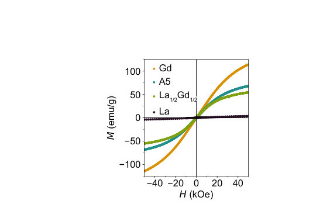
<figcaption class="paper-figure-caption"><b>Fig 5.</b> Fig. 4 Isothermal magnetisation measurements carried out at 2 K for GdM7O3 (orange), A5M7O3 (teal), La1/2Gd1/2M7O3 (green), and LaM7O3 (purple).</figcaption>
</figure>
</div>

<p><strong>Summary.</strong> This work demonstrates that by synthesizing complex perovskite oxides with multiple constituent elements, researchers can precisely tune the magnetic ordering temperature. The control mechanism relies on engineering the structural disorder and the average size of the A-site cations, providing a powerful route for designing novel magnetic materials.</p>
<p><strong>Why it may be interesting.</strong> While focused on magnetism, the ability to tune magnetic ordering via structural disorder ($\sigma^2$) and lattice parameters is relevant to understanding magnetic frustration and phase transitions in complex quantum materials.</p>
<details>
<summary>Detailed structure</summary>
<p><strong>Main problem.</strong> The primary goal is to control the magnetic ordering temperatures in compositionally complex perovskite oxides through precise compositional engineering.</p>
<p><strong>Main result.</strong> The magnetic properties are strongly influenced by a combination of the A-site cationic radii and the size disorder parameter ($\sigma^2$), allowing for tunable magnetic ordering.</p>
<p><strong>Method.</strong> The study combines solid-state synthesis, structural characterization (PXRD, Rietveld refinement), and bulk magnetometry (ZFC/FC measurements).</p>
<p><strong>Model / system.</strong> The system is perovskite oxides ($  ext{A}_5    ext{M}_7    ext{O}_3$) containing twelve different cations across the A and M sites. The structural stability and magnetic interactions are modeled based on the average A-site ionic radius ($\langle r_A 
angle$) and the size disorder ($\sigma^2$).</p>
<p><strong>Key observables.</strong> Magnetic ordering temperature ($T_N$), effective magnetic moment ($\mu_{	ext{eff}}$), Goldschmidt's tolerance factor ($t$), and the size disorder parameter ($\sigma^2$).</p>
<p><strong>Important parameters / regimes.</strong> A-site cationic radii ($r_A$), size disorder ($\sigma^2$), and the B-O-B bond angle.</p>
<p><strong>Assumptions / limitations.</strong> The analysis assumes that the B-site effective magnetic moment remains relatively constant across different compositions, simplifying the determination of the A-site contribution.</p>
<p><strong>Figures summary.</strong> Figures illustrate structural comparisons showing the role of A-site cation size, and the magnetic data plots show the correlation between $T_N$ and $r_A$.</p>
<p><strong>Paper structure.</strong> The paper systematically investigates the structural and magnetic properties of $  ext{A}_5    ext{M}_7    ext{O}_3$ compounds, first establishing the structural dependence on A-site size, and then correlating this structural tuning with the observed magnetic ordering temperatures.</p>
</details>
<details>
<summary>Abstract</summary>
<p>A long standing goal of magnetochemists is to be able to control ordering temperatures through compositional engineering. Here we report the synthesis of a perovskite oxide with twelve cations accommodated within a single phase solid solution, AM7O$_3$, A = La$_{\frac{1}{5}}$Sm$_{\frac{1}{5}}$Gd$_{\frac{1}{5}}$Nd$_{\frac{1}{5}}$Dy$_{\frac{1}{5}}$ (A5), and M7 = Ti$_{\frac{1}{7}}$Cr$_{\frac{1}{7}}$Mn$_{\frac{1}{7}}$Fe$_{\frac{1}{7}}$Co$_{\frac{1}{7}}$Ni$_{\frac{1}{7}}$Cu$_{\frac{1}{7}}$. Bulk magnetometry measurements for A5M7O$_3$, as well as for A = La, Gd and La$_{\frac{1}{2}}$Gd$_{\frac{1}{2}}$, show that all these compounds magnetically order as ferrimagnets between 89 and 115 K. We find that the magnetic properties are influenced by considering a combination of the size disorder parameter alongside the A-site cationic radii and valence electrons.</p>
</details>
<p><sub><a href="#top">↑ back to top</a></sub></p>

<p><a id="paper-2609.40107"></a></p>
<h3 id="verification-complexity-and-extension-of-classical-shadows"><a href="http://arxiv.org/abs/2609.40107v1">Verification Complexity and Extension of Classical Shadows</a></h3>
<p><strong>Authors:</strong> Georgios Karaiskos, Asad Raza, Dorian Rudolph, Dax Enshan Koh, Sevag Gharibian<br>
<strong>Type:</strong> theory · <strong>Category:</strong> quantum information and computing · <strong>PDF:</strong> <a href="https://arxiv.org/pdf/2609.40107v1">https://arxiv.org/pdf/2609.40107v1</a><br>
<strong>Analysis basis:</strong> full PDF text, analyzed in chunks
<strong>Topic relevance:</strong> <code>quantum measurements</code> <strong>3/5</strong></p>
<div class="figure-strip-hint">↔ Scroll figures horizontally</div>
<div class="paper-figures-scroll">
<figure class="paper-figure-card">
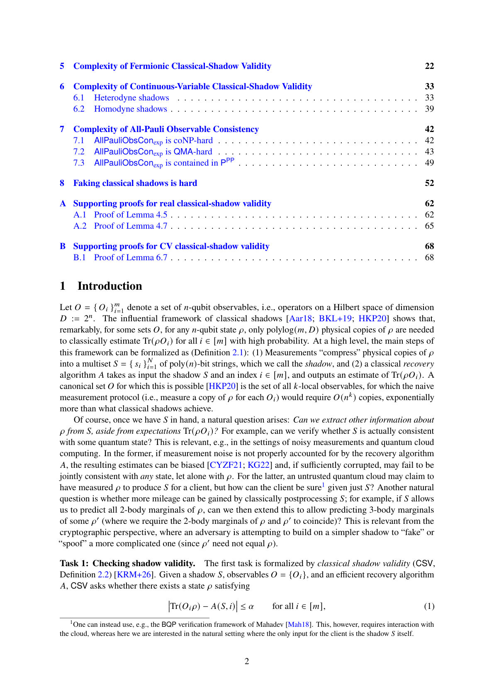
<figcaption class="paper-figure-caption"><b>Fig 1.</b> Low-resolution page preview, page 2</figcaption>
</figure>
<figure class="paper-figure-card">
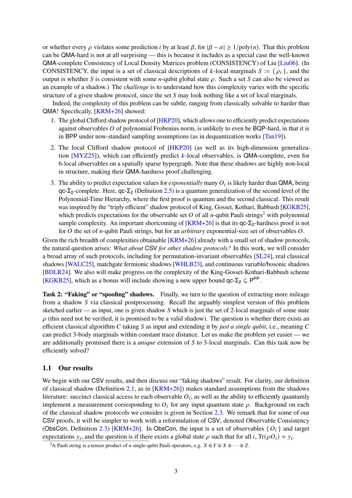
<figcaption class="paper-figure-caption"><b>Fig 2.</b> Low-resolution page preview, page 3</figcaption>
</figure>
<figure class="paper-figure-card">
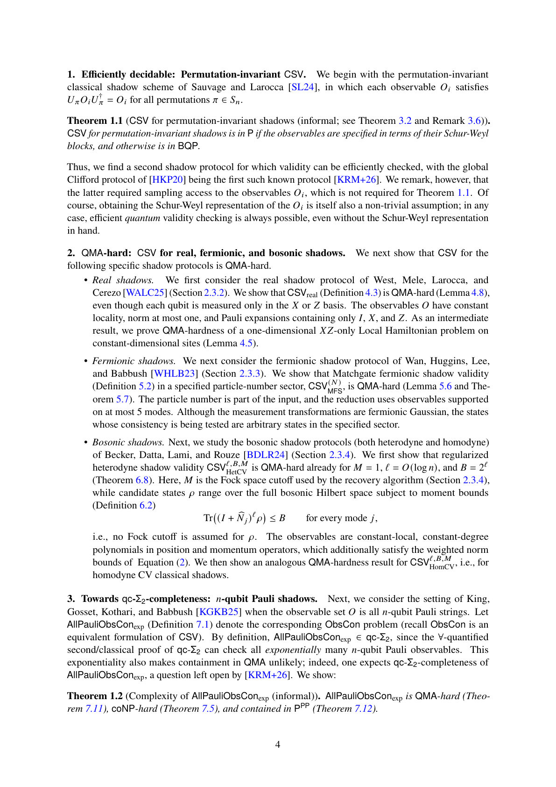
<figcaption class="paper-figure-caption"><b>Fig 3.</b> Low-resolution page preview, page 4</figcaption>
</figure>
<figure class="paper-figure-card">
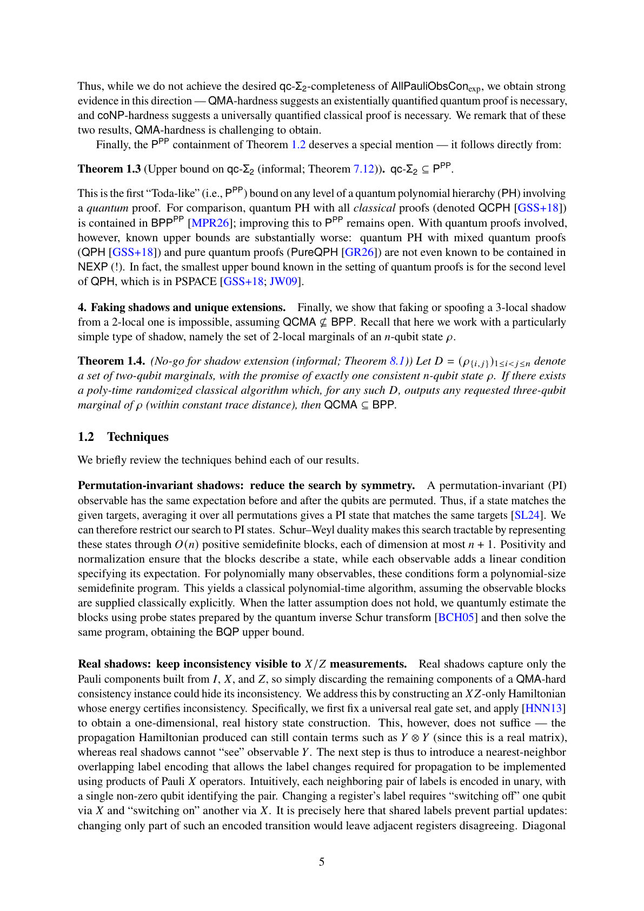
<figcaption class="paper-figure-caption"><b>Fig 4.</b> Low-resolution page preview, page 5</figcaption>
</figure>
<figure class="paper-figure-card">
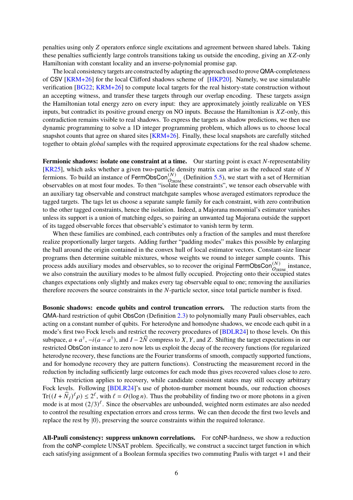
<figcaption class="paper-figure-caption"><b>Fig 5.</b> Low-resolution page preview, page 6</figcaption>
</figure>
</div>

<p><strong>Summary.</strong> This work analyzes the computational difficulty of verifying quantum states from classical measurement data (classical shadows). It proves that for many physical systems, verifying the state's validity is computationally hard (QMA-hard). Furthermore, it shows that predicting higher-order quantum correlations from lower-order measurements is generally intractable.</p>
<p><strong>Why it may be interesting.</strong> The results establish fundamental computational limits on what can be inferred about a quantum state from limited, local measurements, which is crucial for quantum tomography and quantum machine learning.</p>
<details>
<summary>Detailed structure</summary>
<p><strong>Main problem.</strong> The paper investigates the computational complexity of verifying if classical data (a 'shadow') originated from a genuine quantum state, and whether local measurements are sufficient to predict higher-order correlations.</p>
<p><strong>Main result.</strong> Classical Shadow Validity (CSV) is shown to be QMA-hard for several physically relevant shadow types (real, fermionic, bosonic), and predicting 3-local properties from 2-local data is generally intractable.</p>
<p><strong>Method.</strong> The authors employ complexity theory, relating the problem to known hard problems (QMA-hardness) and using advanced techniques like Schur-Weyl duality and quantum hierarchy analysis.</p>
<p><strong>Model / system.</strong> The study is based on the 'classical shadow' framework, where a quantum state $\rho$ is compressed into classical data $S$ via measurements on $n$ qubits. Specific models include real, fermionic, and bosonic systems.</p>
<p><strong>Key observables.</strong> Classical Shadow $S$, $k$-local observables (Pauli strings), 2-local marginals, 3-local marginals.</p>
<p><strong>Important parameters / regimes.</strong> The complexity class hierarchy (QMA, coNP, $\text{qc-}\Sigma_2$), and the locality of the observables (2-local vs 3-local).</p>
<p><strong>Assumptions / limitations.</strong> The hardness results rely on specific constructions for the shadow protocols (e.g., using all $n$-qubit Pauli strings).</p>
<p><strong>Paper structure.</strong> The paper is structured around analyzing two main problems: 1) The complexity of CSV for various shadow types (permutation-invariant, real, fermionic, bosonic), and 2) The intractability of extending local measurements to predict higher-order correlations.</p>
</details>
<details>
<summary>Abstract</summary>
<p>Classical shadows are an influential framework for compressing copies of a given quantum state $ρ$ into classical data $S$, enabling many properties of $ρ$ to be predicted from relatively few copies. In this work, we study two natural questions involving shadows: (1) Given $S$, when can one efficiently verify that $S$ came from a genuine $n$-qubit state? This is called the Classical Shadow Validity (CSV) problem, introduced by Karaiskos, Rudolph, Meyer, Eisert, and Gharibian [ICALP 2026]. (2) Given $S$ that allows one to capture 2-local properties of $ρ$, can one fake or spoof a shadow $S'$ which predicts 3-local properties of some state? For (1), we show CSV is efficiently solvable for permutation-invariant shadows, QMA-hard for real, fermionic, and bosonic shadows, and both coNP-hard and QMA-hard when the observable family consists of all $n$-qubit Pauli strings. A result of independent interest along the way is a new upper bound qc-$Σ_2$ $\subseteq$ $\mathrm{P}^{\mathrm{PP}}$, where qc-$Σ_2$ is a quantum analogue of the second level of the polynomial hierarchy in which the first proof is quantum. For (2), we show intractability: Given the 2-local marginals $S$ of a quantum state $ρ$, estimating the 3-local marginals of $ρ$ is intractable unless QCMA $\subseteq$ BPP, even if the state $ρ$ is the unique state consistent with $S$.</p>
</details>
<p><sub><a href="#top">↑ back to top</a></sub></p>

<p><a id="paper-2609.38533"></a></p>
<h3 id="input-output-formulation-of-quantum-light-spectroscopy"><a href="http://arxiv.org/abs/2609.38533v1">Input-output formulation of quantum light spectroscopy</a></h3>
<p><strong>Authors:</strong> Liwen Ko, Robert L. Cook, K. Birgitta Whaley<br>
<strong>Type:</strong> theory · <strong>Category:</strong> other · <strong>PDF:</strong> <a href="https://arxiv.org/pdf/2609.38533v1">https://arxiv.org/pdf/2609.38533v1</a><br>
<strong>Analysis basis:</strong> full PDF text, analyzed in chunks
<strong>Topic relevance:</strong> <code>Keldysh / 2PI / non-Gaussian methods</code> <strong>2/5</strong> · <code>methods for driven-dissipative</code> <strong>2/5</strong> · <code>Tavis-Cummings &amp; cavity-many-emitter</code> <strong>1/5</strong> · <code>analog quantum simulation</code> <strong>1/5</strong> · <code>correlated / nonlocal dissipation</code> <strong>1/5</strong> · <code>driven-dissipative phase transition</code> <strong>1/5</strong> · <code>interference shaping light</code> <strong>1/5</strong> · <code>quantum measurements</code> <strong>1/5</strong></p>
<div class="figure-strip-hint">↔ Scroll figures horizontally</div>
<div class="paper-figures-scroll">
<figure class="paper-figure-card">
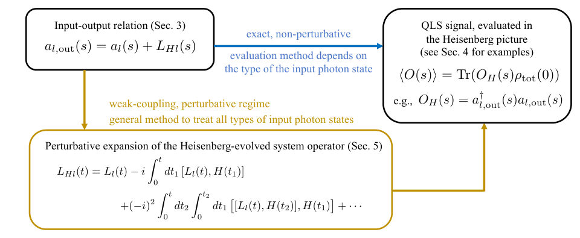
<figcaption class="paper-figure-caption"><b>Fig 1.</b> Figure 1: The input-output formalism for QLS provides a unified framework to treat the quantum light-matter interaction in both the non-perturbative and perturbative regimes. The input-output relation, discussed in Sec. 3, is an exact result under the Hamiltonian of Eq. (24) or (25). Examples of using the input-output relation to analyze various QLS signal observables O are discussed in Sec. 4. In the weak coupling regime, the exact input-output relation can be expanded perturbatively in the Heisenberg picture. This is discussed in Sec. 5.</figcaption>
</figure>
<figure class="paper-figure-card">
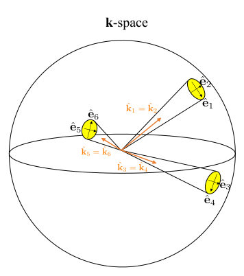
<figcaption class="paper-figure-caption"><b>Fig 2.</b> Figure 2: Schematics of the small solid angle decomposition. The 4π solid angle in k-space is partitioned into M small solid angle sections (colored yellow). Each small solid angle section is a cone in k-space and contains two spatial modes, corresponding to the two polarizations.</figcaption>
</figure>
<figure class="paper-figure-card">
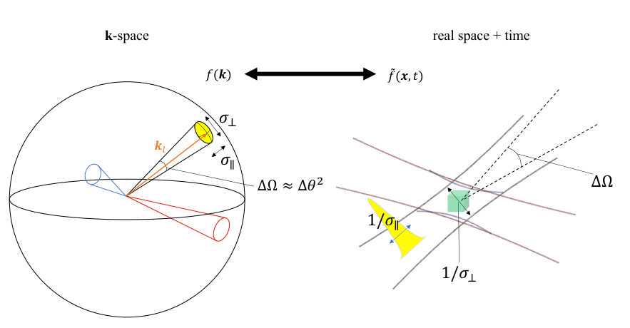
<figcaption class="paper-figure-caption"><b>Fig 3.</b> Figure 3: Three small solid angle modes, colored black, red, and blue, are represented in the k-space and in the real space, under the narrow-band approximation. Under the narrow-band approximation, the mode function f(k) of a small solid angle mode is concentrated in a small region, with a transversal width of σ⊥ and a longitudinal width of σ∥. The transversal width σ⊥is related to the angular width ∆θ by σ⊥∼|kl|∆θ. In real space, the small solid angle mode ˜f(x, t) resembles a Gaussian paraxial mode. At t = 0, the waist has a transversal area on the order of 1/σ2 ⊥. As t →∞, the mode subtends a solid angle area of ∆Ω asymptotically. The paraxial pulse has a longitudinal width of 1/σ∥in...</figcaption>
</figure>
<figure class="paper-figure-card">
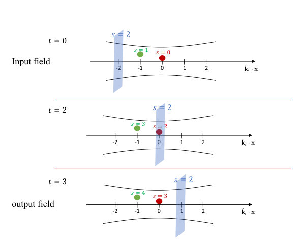
<figcaption class="paper-figure-caption"><b>Fig 4.</b> Figure 4: Graphical illustration of the input-output relation. The three snapshots at different times (t = 0, 2, 3) show the relationship between the retarded time of a traveling field and the retarded time of molecules fixed in position. For simplicity, we set c = 1 in this figure. Under the narrow-band approximation, we can define photon field creation and annihilation operators that are localized in retarded time s = t −ˆkl · x. For example, the field al(s = 2) is represented by the blue transversal plane across the paraxial spatial mode. It travels at the speed of light in the direction of ˆkl. Two molecules are located at fixed positions ˆkl · x = −1 and 0. As time progresses, the...</figcaption>
</figure>
<figure class="paper-figure-card">
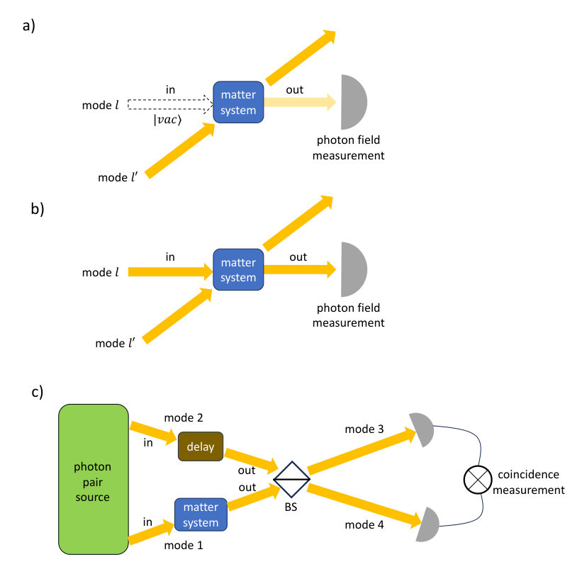
<figcaption class="paper-figure-caption"><b>Fig 5.</b> Figure 5: Three common QLS experimental schemes. (a) Measuring the fluorescent light. The matter system interacts with spatial mode l′, and the signal is detect in a different spatial mode l. The input of mode l′ can be any state of light. The input of the detection mode l is the vacuum state. The analysis can be generalized to consider the matter system interacting with more than one non-detection spatial modes. (b) Measuring the transmitted light. Similar to (a), but the input field state of the detection spatial mode l is not a vacuum state. (c) Hong-Ou-Mandel (HOM) scheme. The input field is typically a photon pair with one photon in mode 1 and another in mode 2. The photon in mode 1...</figcaption>
</figure>
</div>

<p><strong>Summary.</strong> This paper introduces an input-output formulation that unifies the theoretical description of Quantum Light Spectroscopy (QLS). By combining established theories from quantum optics and chemical physics, it provides a mathematically cleaner and more physically intuitive way to calculate spectroscopic signals. This framework is valuable for analyzing light-matter interactions across different coupling strengths.</p>
<p><strong>Why it may be interesting.</strong> This work provides a powerful, unified theoretical tool for analyzing light-matter interactions, which is central to quantum optics and AMO physics, by simplifying complex field descriptions.</p>
<details>
<summary>Detailed structure</summary>
<p><strong>Main problem.</strong> The paper develops a unified input-output formulation for Quantum Light Spectroscopy (QLS) to provide an intuitive and rigorous description across various experimental regimes.</p>
<p><strong>Main result.</strong> The input-output relation successfully unifies the description of QLS signals, allowing for both non-perturbative and perturbative calculations of observables.</p>
<p><strong>Method.</strong> It combines input-output theory from quantum optics with perturbative expansion methods from chemical physics, analyzing the system evolution in the Heisenberg picture.</p>
<p><strong>Model / system.</strong> The system involves the quantum interaction between light (photon field) and matter (e.g., molecules), modeled using the dipole-electric field Hamiltonian. The 3D field is mathematically decomposed into a finite set of 1D modes using a small solid angle approximation.</p>
<p><strong>Key observables.</strong> QLS signal expectation values, second-order coherence function g^(2)(τ), and the input/output field operators.</p>
<p><strong>Important parameters / regimes.</strong> The formalism distinguishes between real and retarded time, and the analysis covers both weak-coupling (perturbative) and general (non-perturbative) regimes.</p>
<p><strong>Assumptions / limitations.</strong> Key approximations include the dipole approximation, the rotating wave approximation (RWA), and the small solid angle decomposition scheme for field quantization.</p>
<p><strong>Figures summary.</strong> Figures illustrate the input-output formalism unifying QLS descriptions and show schematics for partitioning the 4pi solid angle into small sections in k-space.</p>
<p><strong>Paper structure.</strong> The paper progresses by first establishing the mathematical necessity of decomposing the 3D field into 1D modes, then developing the input-output relation, and finally applying this framework to calculate various spectroscopic signals in both perturbative and non-perturbative limits.</p>
</details>
<details>
<summary>Abstract</summary>
<p>We develop an input-output formulation of quantum light spectroscopy (QLS) by combining the input-output theory, commonly used in quantum optics, with the perturbative expansion method for nonlinear spectroscopy, commonly used in chemical physics. The use of the input-output relation provides physical intuition for how matter systems alter the photon input field. As examples, we consider linear spectroscopy, fluorescence, intra-beam $G^{(2)}$, and Hong-Ou-Mandel correlation. For certain initial photon states, we show that signal expectation values can be evaluated non-perturbatively. For general initial photon states, the signals can be computed via a perturbative expansion of the input-output relation. The input-output relation reduces the work needed to perturbatively expand the optical signal, allowing for cleaner derivations and clearer physical interpretations.</p>
</details>
<p><sub><a href="#top">↑ back to top</a></sub></p>

<p><a id="paper-2609.39205"></a></p>
<h3 id="excursion-resolved-thermodynamic-inference-without-observing-reverse-transitions"><a href="http://arxiv.org/abs/2609.39205v1">Excursion-Resolved Thermodynamic Inference without Observing Reverse Transitions</a></h3>
<p><strong>Authors:</strong> Jie Gu<br>
<strong>Type:</strong> theory · <strong>Category:</strong> statistical mechanics · <strong>PDF:</strong> <a href="https://arxiv.org/pdf/2609.39205v1">https://arxiv.org/pdf/2609.39205v1</a><br>
<strong>Analysis basis:</strong> full PDF text, analyzed in chunks
<strong>Topic relevance:</strong> <code>methods for driven-dissipative</code> <strong>2/5</strong> · <code>quantum measurements</code> <strong>2/5</strong> · <code>Keldysh / 2PI / non-Gaussian methods</code> <strong>1/5</strong> · <code>correlated / nonlocal dissipation</code> <strong>1/5</strong> · <code>driven-dissipative phase transition</code> <strong>1/5</strong> · <code>non-equilibrium universality</code> <strong>1/5</strong></p>
<div class="figure-strip-hint">↔ Scroll figures horizontally</div>
<div class="paper-figures-scroll">
<figure class="paper-figure-card">
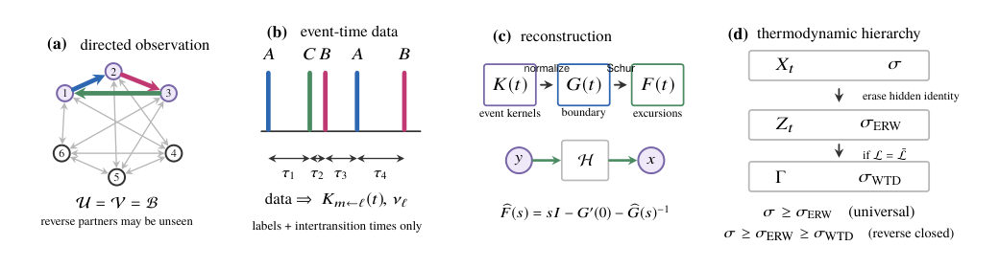
<figcaption class="paper-figure-caption"><b>Fig 1.</b> FIG. 1. From directed transition records to reconstructed dissipation. (a) A source-target-closed set of one-way visible events can be embedded in a network whose reverse transitions and internal motion remain unseen. (b) The measured record contains only visible labels and intertransition times, from which the complete pairwise kernel matrix 𝐾(𝑡) = [𝐾𝑚←ℓ(𝑡)]𝑚,ℓand event rates 𝜈ℓare estimated. (c) Zero-time normalization reconstructs the boundary propagator 𝐺(𝑡) from 𝐾(𝑡), while a Schur complement reconstructs the hidden-excursion kernel 𝐹(𝑡). (d) The boundary-path law reconstructed for 𝑍𝑡retains more time-reversal information than the visible event path Γ: universally 𝜎≥𝜎ERW, and for...</figcaption>
</figure>
<figure class="paper-figure-card">
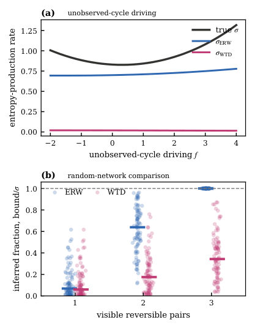
<figcaption class="paper-figure-caption"><b>Fig 2.</b> FIG. 2. Reverse-closed comparison of ERW and WTD from the same event-time record. (a) An unobserved-cycle driving scan for a six-state network with two visible reversible edge pairs (|Ω| = 6 and |B| = 4). The scanned links are disjoint from the detected pairs. The exact entropy production, the excursion-resolved bound 𝜎ERW, and the standard transition-WTD bound 𝜎WTD are shown together. (b) Ninety random six-state networks are analyzed for observations with one, two, or three visible reversible edge pairs. Points show the inferred fractions 𝜎ERW/𝜎and 𝜎WTD/𝜎, and horizontal bars show medians. ERW systematically sharpens the same-record WTD estimate while remaining below the exact entropy...</figcaption>
</figure>
<figure class="paper-figure-card">
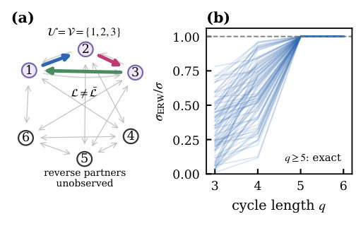
<figcaption class="paper-figure-caption"><b>Fig 3.</b> FIG. 3. Thermodynamic inference without visible reversibility. (a) A one-way detector cycle provides source-target closure on the bound- ary states {1, 2, 3} while remaining non-reverse-closed, L ≠¯L. The reverse partners exist microscopically but are not detected. (b) Ninety random six-state networks are analyzed using directed cycles of length 𝑞= 3, 4, 5, 6. Each faint polyline shows 𝜎ERW/𝜎for one realization as the cycle length increases. The recovered fraction is nondecreas- ing along the nested boundaries B𝑞= {1, . . . , 𝑞}. For these six-state networks, 𝑞= 5 and 𝑞= 6 are exact because at most one hidden state remains.</figcaption>
</figure>
</div>

<p><strong>Summary.</strong> This paper develops a method to estimate entropy production in Markovian systems when only a subset of transitions are observed. By analyzing waiting-time distributions across these visible events, the authors derive an excursion-resolved bound ($\sigma_{ERW}$) that is rigorously shown to be a tighter lower bound on the true entropy production than standard estimators. This advances the field by quantifying the information lost due to incomplete experimental observation.</p>
<p><strong>Why it may be interesting.</strong> This work provides a powerful theoretical tool for analyzing non-equilibrium processes in mesoscopic physics, directly applicable to understanding energy dissipation in systems where measurement limitations obscure the full dynamical landscape.</p>
<details>
<summary>Detailed structure</summary>
<p><strong>Main problem.</strong> The paper addresses the challenge of reconstructing underlying state dynamics and quantifying entropy production when experimental measurements only capture a subset of possible transitions, leaving reverse processes unobserved.</p>
<p><strong>Main result.</strong> It establishes a rigorous hierarchy of entropy production bounds ($\sigma \ge \sigma_{ERW} \ge \sigma_{WTD}$), showing that analyzing waiting-time distributions across observed transitions ($\sigma_{ERW}$) provides a tighter lower bound than standard methods ($\sigma_{WTD}$).</p>
<p><strong>Method.</strong> The core method involves analyzing joint next-label/time densities to reconstruct the boundary propagator and hidden-excursion kernel, allowing for the calculation of the excursion-resolved entropy production estimator ($\sigma_{ERW}$).</p>
<p><strong>Model / system.</strong> The analysis is based on an irreducible stationary continuous-time Markov jump process on a finite state space, modeled using microscopic rate matrices (generators $\mathbf{W}$).</p>
<p><strong>Key observables.</strong> Entropy production rates ($\sigma, \sigma_{ERW}, \sigma_{WTD}$), visible event rates ($
u_\ell$), and the hidden-excursion kernel $F(t)$.</p>
<p><strong>Important parameters / regimes.</strong> The source–target closure condition ($U=V$) is crucial for the reconstruction; the analysis also uses kinetic scales ($b_{ij}$) and edge affinities ($a_{ij}$) in numerical examples.</p>
<p><strong>Assumptions / limitations.</strong> The primary assumptions include the source–target closure condition ($U=V$) and the assumption that the boundary-resolved trajectory follows a physical coarse trajectory.</p>
<p><strong>Figures summary.</strong> Figures illustrate the information hierarchy, comparing the true entropy production ($\sigma$) against the excursion-resolved bound ($\sigma_{ERW}$) and the standard waiting-time bound ($\sigma_{WTD}$), demonstrating how $\sigma_{ERW}$ captures information missed by $\sigma_{WTD}$.</p>
<p><strong>Paper structure.</strong> The paper develops the theoretical framework by defining the Markov process, deriving the various entropy estimators ($\sigma_{ERW}$ and $\sigma_{WTD}$), establishing the inequality hierarchy ($\sigma \ge \sigma_{ERW} \ge \sigma_{WTD}$), and concluding with numerical examples showing the recovery of full dynamics from partial observations.</p>
</details>
<details>
<summary>Abstract</summary>
<p>Experiments often detect only selected transitions, leaving the underlying state dynamics and dissipation hidden. We show that waiting-time distributions between directed visible events can reconstruct the boundary dynamics without observing the reverse of every detected transition. Under a simple source-target closure condition, they determine visible rates and the hidden excursions connecting observed states, yielding a rigorous lower bound on total entropy production that improves the standard waiting-time estimate when reverse events are available. Remarkably, observing only a spanning directed cycle is sufficient to identify the full Markov generator, even when all reverse cycle edges and other microscopic transitions remain unseen.</p>
</details>
<p><sub><a href="#top">↑ back to top</a></sub></p>

<p><a id="paper-2609.39046"></a></p>
<h3 id="fixed-point-bifurcations-and-path-information-bounds-in-nonlinear-exceptional-point-sensing"><a href="http://arxiv.org/abs/2609.39046v1">Fixed-Point Bifurcations and Path-Information Bounds in Nonlinear Exceptional-Point Sensing</a></h3>
<p><strong>Authors:</strong> Xue-Hao Yu, Cong-Feng Qiao<br>
<strong>Type:</strong> theory · <strong>Category:</strong> other · <strong>PDF:</strong> <a href="https://arxiv.org/pdf/2609.39046v1">https://arxiv.org/pdf/2609.39046v1</a><br>
<strong>Analysis basis:</strong> full PDF text, analyzed in chunks
<strong>Topic relevance:</strong> <code>quantum measurements</code> <strong>2/5</strong> · <code>Keldysh / 2PI / non-Gaussian methods</code> <strong>1/5</strong> · <code>analog quantum simulation</code> <strong>1/5</strong> · <code>correlated / nonlocal dissipation</code> <strong>1/5</strong> · <code>driven-dissipative phase transition</code> <strong>1/5</strong> · <code>methods for driven-dissipative</code> <strong>1/5</strong> · <code>non-equilibrium universality</code> <strong>1/5</strong></p>
<div class="figure-strip-hint">↔ Scroll figures horizontally</div>
<div class="paper-figures-scroll">
<figure class="paper-figure-card">
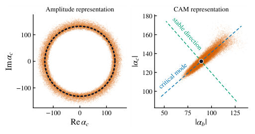
<figcaption class="paper-figure-caption"><b>Fig 1.</b> FIG. 1. Coherent-amplitude matrix (CAM) represen- tation. Left: Annular steady-state distribution in complex- amplitude space; the dotted line shows the noise-free rotating orbit. Right: Localized distribution under the CAM mapping R = αα†, with the noise-free fixed point (dot). Dashed lines indicate the critical mode and orthogonal stable direction of the CAM Jacobian.</figcaption>
</figure>
<figure class="paper-figure-card">
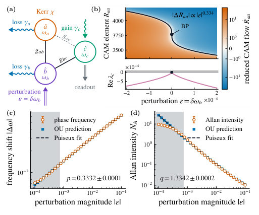
<figcaption class="paper-figure-caption"><b>Fig 2.</b> FIG. 2. Cubic critical response and noise in a three- mode Kerr sensor. (a) System schematic with Kerr mode ˆa, perturbed mode ˆb, and active readout mode ˆc. (b) Re- duced CAM flow and vanishing critical eigenvalue λc near the cusp bifurcation point (BP). (c) Carrier-frequency shift showing |∆ω| ∝ε1/3 critical scaling compared with the CAM prediction. (d) Allan intensity showing NA ∝ε−4/3 scaling. Light-gray shading marks the nonlinear regime (η2 ≥1/3).</figcaption>
</figure>
<figure class="paper-figure-card">
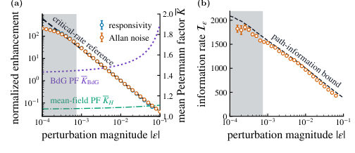
<figcaption class="paper-figure-caption"><b>Fig 3.</b> FIG. 3. Critical amplification and path-information bound. (a) Simulated signal and Allan-noise enhancements compared with the critical-rate reference |Re λc|−2. The right axis displays mean-field (KMF) and BdG (KBdG) Petermann factors. (b) Simulated information rate Iε saturating the critical-mode path Fisher-information rate ˙Ipath. Shading marks the nonlinear regime (η2 ≥1/3).</figcaption>
</figure>
</div>

<p><strong>Summary.</strong> This paper rigorously analyzes nonlinear exceptional-point sensing, proving that while the response can appear singular, the achievable signal-to-noise ratio (SNR) is fundamentally limited. By deriving a path-information bound, the authors show that the apparent infinite enhancement is impossible, establishing a finite, information-optimal ceiling for sensing performance.</p>
<p><strong>Why it may be interesting.</strong> This work provides rigorous theoretical constraints on quantum sensing, moving beyond simple scaling arguments to establish fundamental information-theoretic limits based on nonlinear dynamics and bifurcations, which is highly relevant to quantum optics and open quantum systems.</p>
<details>
<summary>Detailed structure</summary>
<p><strong>Main problem.</strong> The paper addresses conflicting theoretical conclusions regarding the achievable signal-to-noise ratio (SNR) enhancement in nonlinear exceptional-point (NEP) sensing.</p>
<p><strong>Main result.</strong> It proves that any singular frequency response requires a fixed-point bifurcation, and crucially, the SNR enhancement is fundamentally limited by a finite path-information bound, precluding divergent asymptotic gains.</p>
<p><strong>Method.</strong> The analysis employs the Coherent-Amplitude Matrix (CAM) representation to analyze phase-invariant dynamics, deriving fixed-point bifurcation conditions and applying path-information theory.</p>
<p><strong>Model / system.</strong> The study models nonlinear sensor systems (e.g., optical micro-cavities) whose dynamics are governed by stochastic Langevin equations, analyzed via a reduced center manifold flow.</p>
<p><strong>Key observables.</strong> Responsivity ($\mu_\omega$), frequency uncertainty ($\sigma_\omega$), Signal-to-Noise Ratio (SNR), and the path-information bound ($\dot{I}_{	ext{path}}$).</p>
<p><strong>Important parameters / regimes.</strong> Critical relaxation rate ($\lambda_c$), bifurcation parameter ($\epsilon$), and the effective drive/coupling coefficients ($F_c, g_c$).</p>
<p><strong>Assumptions / limitations.</strong> The analysis assumes the existence of a global U(1) phase symmetry allowing the use of the CAM representation, and it focuses on the local fluctuation regime (Ornstein-Uhlenbeck process).</p>
<p><strong>Figures summary.</strong> Figure 1 illustrates the CAM representation transition from an annular to a localized distribution around a fixed point. Figure 2 likely details the scaling of responsivity and noise in the local fluctuation regime.</p>
<p><strong>Paper structure.</strong> The paper first establishes the mathematical requirement for singular response (fixed-point bifurcation) using the CAM formalism. It then analyzes the local fluctuation regime, showing the cancellation of divergent terms in the SNR. Finally, it derives and emphasizes the universal, finite path-information bound that governs the long-time sensitivity.</p>
</details>
<details>
<summary>Abstract</summary>
<p>Nonlinear exceptional points (NEPs) were proposed to circumvent the noise--responsivity cancellation that limits linear exceptional-point sensors. At an NEP, the stationary frequency response can be singular while the Hamiltonian Petermann factor remains finite, suggesting a genuine signal-to-noise ratio (SNR) enhancement. Yet recent model-specific analyses of nonlinear fluctuations have reached conflicting conclusions. We prove that any singular stationary frequency response requires a fixed-point bifurcation of the nonlinear dynamics. In local fluctuation regimes, the singularities in responsivity and long-time frequency uncertainty are both set by the critical relaxation rate, leading to exact cancellation in the SNR and precluding any divergent enhancement. Furthermore, we derive a path-information bound that applies across both local and nonlinear fluctuation regimes and places a finite ceiling on the long-time SNR enhancement. Notably, this upper bound is attainable in the local fluctuation regime, implying that frequency readout under such parameter settings is information-optimal.</p>
</details>
<p><sub><a href="#top">↑ back to top</a></sub></p>

<p><a id="paper-2609.38581"></a></p>
<h3 id="theory-of-criticality-enabled-math1045math-symmetry-breaking-in-a-class-of-11d-systems"><a href="http://arxiv.org/abs/2609.38581v1">Theory of criticality-enabled $U(1)$ symmetry breaking in a class of 1+1D systems</a></h3>
<p><strong>Authors:</strong> E. S. Andriyakhina, A. S. Shankar, T. Senthil, Z. D. Shi<br>
<strong>Type:</strong> both · <strong>Category:</strong> strongly correlated electrons · <strong>PDF:</strong> <a href="https://arxiv.org/pdf/2609.38581v1">https://arxiv.org/pdf/2609.38581v1</a><br>
<strong>Analysis basis:</strong> full PDF text, analyzed in chunks
<strong>Topic relevance:</strong> <code>Keldysh / 2PI / non-Gaussian methods</code> <strong>2/5</strong> · <code>methods for driven-dissipative</code> <strong>2/5</strong> · <code>Frenkel-Kontorova</code> <strong>1/5</strong> · <code>analog quantum simulation</code> <strong>1/5</strong> · <code>driven-dissipative phase transition</code> <strong>1/5</strong> · <code>non-equilibrium universality</code> <strong>1/5</strong></p>
<div class="figure-strip-hint">↔ Scroll figures horizontally</div>
<div class="paper-figures-scroll">
<figure class="paper-figure-card">
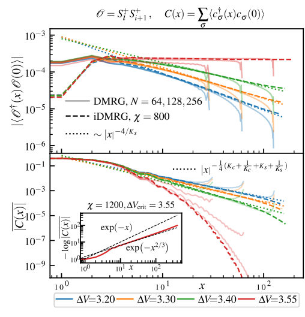
<figcaption class="paper-figure-caption"><b>Fig 1.</b> FIG. 1. Numerically obtained correlation functions for the lattice model at the QCP (red, ∆Vcrit = 3.55) and in the LL phase (blue, orange, and green, ∆V &lt; ∆Vcrit). Dashed curves show iDMRG results, while faded solid curves show finite-size DMRG data for N = 64, 128, 256, with x = 0 at the chain midpoint. In the LL phase, the correlators exhibit the expected power-law decay. Top: The nematic order pa- rameter saturates at long distances, demonstrating true LRO at the QCP. Bottom: The electron Green’s function C(x), averaged over a four-site window. The inset provides a guide to the stretched-exponential decay, to be compared with the large-N field-theory prediction log χϕ,π ∼−x2/3.</figcaption>
</figure>
<figure class="paper-figure-card">

<figcaption class="paper-figure-caption"><b>Fig 2.</b> FIG. 2. The correlation function of the operator S+ at the QCP. The (i)DMRG numerics show characteristic 2kF oscilla- tions. This correlation function exhibits power-law decay due to the gapless charge mode. In a spin model without such a gapless charge sector, as in Refs. [16, 18], the corresponding operator would instead exhibit true LRO.</figcaption>
</figure>
</div>

<p><strong>Summary.</strong> This work provides an analytic and numerical theory demonstrating how quantum criticality can induce spontaneous U(1) symmetry breaking in 1+1D systems. By analyzing the effective Lifshitz field theory and simulating an itinerant-fermion chain, the authors show that the symmetry breaking manifests as long-range order in certain operators alongside characteristic stretched-exponential decay in correlation functions.</p>
<p><strong>Why it may be interesting.</strong> The connection between continuum field theory predictions (like the $z 
eq 1$ constraint) and concrete numerical results from strongly correlated lattice models (like DMRG) provides a powerful, quantitative test of emergent quantum critical phenomena.</p>
<details>
<summary>Detailed structure</summary>
<p><strong>Main problem.</strong> The paper investigates the mechanism and consequences of spontaneous U(1) symmetry breaking enabled by quantum criticality in one-dimensional (1+1D) quantum systems.</p>
<p><strong>Main result.</strong> The theory predicts that if the dynamical exponent $z 
eq 1$, the U(1) symmetry must break, which is confirmed numerically by observing long-range order in specific spin-nematic operators and stretched-exponential decay in electron Green's functions at the quantum critical point.</p>
<p><strong>Method.</strong> The study employs a combination of analytic field theory techniques (large-$N$ limit, bosonization) and advanced numerical simulations using infinite Density Matrix Renormalization Group (iDMRG).</p>
<p><strong>Model / system.</strong> The analysis focuses on a class of 1+1D systems, modeled via a Lifshitz field theory derived from an itinerant-fermion chain exhibiting $U(1) 
times \mathbb{Z}_2$ symmetry.</p>
<p><strong>Key observables.</strong> Long-range order (LRO) of the $U(1)$-charged phase vertex $e^{ieta	heta}$, the decay rate of the conjugate vertex $\langle e^{ieta\phi(x)} e^{-ieta\phi(0)}
angle$, and the electron Green's function $C(x)$.</p>
<p><strong>Important parameters / regimes.</strong> The dynamical exponent $z$, the large-$N$ limit, and the critical point (QCP) of the $\mathbb{Z}_2$ ferromagnetic transition.</p>
<p><strong>Assumptions / limitations.</strong> The initial analytic argument relies on the assumption that the dynamical exponent $z 
eq 1$ for the Lifshitz field theory.</p>
<p><strong>Figures summary.</strong> Figures show numerical correlation functions where the nematic order parameter saturates at long distances (LRO at QCP), and the electron Green's function exhibits stretched-exponential decay, matching theoretical predictions.</p>
<p><strong>Paper structure.</strong> The paper develops an analytic theory using a large-$N$ limit of the Lifshitz field theory, deriving predictions for correlation function decay. These predictions are then rigorously tested using iDMRG simulations on an itinerant-fermion chain, confirming the theoretical mechanism of symmetry breaking.</p>
</details>
<details>
<summary>Abstract</summary>
<p>We present an analytic theory of the recently proposed phenomenon of spontaneous $U(1)$ symmetry breaking at 1+1D Lifshitz quantum critical points. The low-energy field theory contains two periodic scalars $θ$ and $φ$, with a Berry phase coupling that makes $θ$ canonically conjugate to the $U(1)$ charge density $\partial_x φ$. Within a controlled large-$N$ limit, we demonstrate that the $U(1)$-charged phase vertex $e^{iβθ}$ develops long-range order, while the conjugate vertex $e^{iβφ}$ decays as a stretched exponential, $\log\langle e^{iβφ(x)} e^{-iβφ(0)}\rangle\propto-|β|^{4/3}|x|^{2/3}$. Going beyond the large-$N$ limit, we give an analytic argument that the Lifshitz field theory supports $U(1)$ long-range order provided its dynamical exponent satisfies $z\neq1$, a condition strongly supported by existing calculations. We test these predictions using finite-size and infinite-system DMRG in an itinerant-fermion chain with $U(1) \rtimes \mathbb{Z}_2$ symmetry. At the $\mathbb{Z}_2$ ferromagnetic transition, the spin sector of the chain maps to the Lifshitz field theory. Consistent with analytic predictions, the $U(1)$-charged spin-nematic bond operator $S_i^+S_{i+1}^+$ exhibits long-range order, while the electron Green's function shows stretched-exponential decay. Together, these results elucidate the mechanism and consequences of criticality-enabled $U(1)$ symmetry breaking in 1+1D.</p>
</details>
<p><sub><a href="#top">↑ back to top</a></sub></p>

<p><a id="paper-2609.38882"></a></p>
<h3 id="classical-algorithms-for-function-computation-in-gaussian-boson-sampling"><a href="http://arxiv.org/abs/2609.38882v1">Classical Algorithms for Function Computation in Gaussian Boson Sampling</a></h3>
<p><strong>Authors:</strong> Ruoting Dou, Hao Zhan, Shengjun Wu, Lijian Zhang, Penghui Yao<br>
<strong>Type:</strong> theory · <strong>Category:</strong> quantum information and computing · <strong>PDF:</strong> <a href="https://arxiv.org/pdf/2609.38882v1">https://arxiv.org/pdf/2609.38882v1</a><br>
<strong>Analysis basis:</strong> full PDF text, analyzed in chunks
<strong>Topic relevance:</strong> <code>Full counting statistics</code> <strong>2/5</strong> · <code>methods for driven-dissipative</code> <strong>2/5</strong> · <code>quantum measurements</code> <strong>2/5</strong> · <code>analog quantum simulation</code> <strong>1/5</strong></p>
<div class="figure-strip-hint">↔ Scroll figures horizontally</div>
<div class="paper-figures-scroll">
<figure class="paper-figure-card">

<figcaption class="paper-figure-caption"><b>Fig 1.</b> Low-resolution page preview, page 2</figcaption>
</figure>
<figure class="paper-figure-card">

<figcaption class="paper-figure-caption"><b>Fig 2.</b> Low-resolution page preview, page 3</figcaption>
</figure>
<figure class="paper-figure-card">

<figcaption class="paper-figure-caption"><b>Fig 3.</b> Low-resolution page preview, page 4</figcaption>
</figure>
<figure class="paper-figure-card">

<figcaption class="paper-figure-caption"><b>Fig 4.</b> Low-resolution page preview, page 5</figcaption>
</figure>
<figure class="paper-figure-card">

<figcaption class="paper-figure-caption"><b>Fig 5.</b> Low-resolution page preview, page 6</figcaption>
</figure>
</div>

<p><strong>Summary.</strong> This paper analyzes function computation in Gaussian Boson Sampling (GBS) by focusing on the average expectation value of functions applied to photon-number outcomes. The authors prove that for finite squeezing, this average value can be efficiently estimated classically. This work refines the understanding of GBS complexity by distinguishing between sampling hardness and the complexity of calculating specific function averages.</p>
<p><strong>Why it may be interesting.</strong> It provides new theoretical tools for analyzing linear-optical quantum systems, clarifying the conditions under which GBS hardness might fail for specific types of post-processing measurements.</p>
<details>
<summary>Detailed structure</summary>
<p><strong>Main problem.</strong> The paper addresses whether function computation based on mode-resolved photon-number outcomes from Gaussian Boson Sampling (GBS) can be classically evaluated, moving beyond merely establishing sampling hardness.</p>
<p><strong>Main result.</strong> It proves that the average-case expectation value of such functions can be classically estimated with high accuracy for inputs with finite squeezing strength.</p>
<p><strong>Method.</strong> The analysis uses operator space decomposition into irreducible U(m)-submodules and develops randomized classical polynomial-time algorithms based on Monte Carlo estimation.</p>
<p><strong>Model / system.</strong> The system is Gaussian Boson Sampling (GBS) implemented with squeezed-vacuum states injected into a passive linear-optical network, followed by photon-number-resolving detection.</p>
<p><strong>Key observables.</strong> The expectation value $\mu_f(U) := \mathbb{E}_{s \sim P_U} [f(s)]$ of a function $f$ applied to mode-resolved photon-number outcomes.</p>
<p><strong>Important parameters / regimes.</strong> Finite squeezing strength ($r_{	ext{max}} < \infty$), system size ($m$), and the required estimation error ($\epsilon$).</p>
<p><strong>Assumptions / limitations.</strong> The analysis assumes the function $f$ is polynomial-time evaluable on recorded PNR outcomes and that the squeezing strength is finite.</p>
<p><strong>Figures summary.</strong> TABLE I compares the resource boundary for different GBS variants, highlighting the novel area of 'Function-average estimation' achieving 'Efficient classical estimation'.</p>
<p><strong>Paper structure.</strong> The structure involves decomposing the operator space into correlation orders ($V_{n,k}$), deriving error bounds based on this decomposition, and finally constructing a classical Monte Carlo algorithm to estimate the expectation value by truncating the infinite sum.</p>
</details>
<details>
<summary>Abstract</summary>
<p>Gaussian boson sampling (GBS) seeks quantum advantage by sampling photon-number patterns generated with squeezed inputs and passive linear optics. Many proposed GBS applications instead target function computation by applying functions to mode-resolved photon-number outcomes---a natural form of experimental postprocessing that produces classical outputs. Sampling hardness alone, however, does not determine the complexity of these tasks. By analyzing the irreducible decomposition of fixed-photon-number operator spaces, we prove that the expectation value of every such function in the average case over passive linear-optical networks can be classically evaluated for inputs with finite squeezing strength. We also provide a classical algorithm that estimates this value to inverse-polynomial additive error. The result provides new theoretical tools for analyzing linear-optical quantum systems, helps clarify the origin of current GBS hardness evidence, and inspires new applications of GBS with genuine quantum advantages.</p>
</details>
<p><sub><a href="#top">↑ back to top</a></sub></p>

<p><a id="paper-2609.39946"></a></p>
<h3 id="computing-extinction-barriers-in-a-quorum-sensing-reaction-network"><a href="http://arxiv.org/abs/2609.39946v1">Computing Extinction Barriers in a Quorum-Sensing Reaction Network</a></h3>
<p><strong>Authors:</strong> Mario Ayala, Johannes Zimmer<br>
<strong>Type:</strong> theory · <strong>Category:</strong> statistical mechanics · <strong>PDF:</strong> <a href="https://arxiv.org/pdf/2609.39946v1">https://arxiv.org/pdf/2609.39946v1</a><br>
<strong>Analysis basis:</strong> full PDF text, analyzed in chunks
<strong>Topic relevance:</strong> <code>methods for driven-dissipative</code> <strong>2/5</strong> · <code>Keldysh / 2PI / non-Gaussian methods</code> <strong>1/5</strong> · <code>correlated / nonlocal dissipation</code> <strong>1/5</strong> · <code>driven-dissipative phase transition</code> <strong>1/5</strong> · <code>non-equilibrium universality</code> <strong>1/5</strong> · <code>quantum measurements</code> <strong>1/5</strong></p>
<div class="figure-strip-hint">↔ Scroll figures horizontally</div>
<div class="paper-figures-scroll">
<figure class="paper-figure-card">

<figcaption class="paper-figure-caption"><b>Fig 1.</b> Figure 2: The four stochastic channels and their feedback. Blue arrows change the cell count and orange arrows change the signal count. The dashed arrow is regulation, not an additional jump: signal enters the division rate b(w).</figcaption>
</figure>
<figure class="paper-figure-card">

<figcaption class="paper-figure-caption"><b>Fig 2.</b> Figure 3: Phase portrait of (6) at c = 0.36. Grey: the nullclines ˙w = 0 (dashed) and ˙x = 0 (solid), which do not depend on r; filled points are the stable states and the open point is the saddle U∗. Thick curves: the separatrix at r = 0.5 and r = 8, with Boff(r) below and to the left of it. Dotted: the threshold line x = x∗. Shaded: the target Roff = [0, 0.3] × [0, 0.7]. Dashed coloured curves: minimum-action paths from Uon to U∗. Thin curves: relaxation paths from the square marker, in the same colours, which reach the same state along routes that depend on r. All quantities are dimensionless.</figcaption>
</figure>
<figure class="paper-figure-card">

<figcaption class="paper-figure-caption"><b>Fig 3.</b> Figure 4: Extinction-time barrier extraction at c = 0.36. Left: estimated mean extinction times (2) and the weighted fits (29). Right: the fit residuals in the same log units, with nominal n−1/2 exit error bars. All quantities are dimensionless.</figcaption>
</figure>
<figure class="paper-figure-card">

<figcaption class="paper-figure-caption"><b>Fig 4.</b> Figure 5: Minimum-action crossover. Left: minimum-action paths from Uon (filled point) to the saddle U∗(open point) at c = 0.36, with the endpoint imposed as in (13); the dashed line is the quasi-steady relation. Middle: finite-r barriers, the eliminated-signal value, and ∆V∞+A/r using (26). Right: the rescaled excess barrier at five costs. A plateau identifies the 1/r scaling and its level gives Anum; the shaded region marks r ≥4. All quantities are dimensionless.</figcaption>
</figure>
<figure class="paper-figure-card">

<figcaption class="paper-figure-caption"><b>Fig 5.</b> Figure 5 shows the minimum-action results. The left panel exposes the mechanism: finite-r minimum-action paths bow above the quasi-steady signal relation and approach it as r increases. The middle panel shows the corresponding barriers. At r = 1 the barrier is 0.0953, i.e. it exceeds the eliminated-signal value ∆V∞= 0.0614 by 55%, and between r = 0.5 and r = 64 it changes by a factor of 1.98, although the deterministic equilibria and their stability types are independent of r. The right panel tests the exponent in (3) without using the analytical coefficient: for each of five costs, r[∆Vnum(r) −∆V∞] approaches a plateau. Over r ≥4 the plateau spread is 0.57% at c = 0.36 and at most 3.5%...</figcaption>
</figure>
</div>

<p><strong>Summary.</strong> This work analyzes the stochastic dynamics of a quorum-sensing network to compute the barrier separating the active state from extinction. By varying the signal dynamics rate ($r$), the authors show that the extinction barrier changes significantly, even though the system's stable states remain fixed. The study rigorously validates these findings by comparing minimum-action path calculations against direct stochastic simulations.</p>
<p><strong>Why it may be interesting.</strong> The methodology of calculating rare-event transition rates (extinction barriers) in complex, non-equilibrium stochastic systems is highly relevant to open quantum systems, particularly those modeled by master equations or jump processes.</p>
<details>
<summary>Detailed structure</summary>
<p><strong>Main problem.</strong> The paper computes the extinction barrier for a quorum-sensing reaction network, investigating how changing the signal dynamics rate ($r$) affects the mean time to extinction even when deterministic equilibria remain unchanged.</p>
<p><strong>Main result.</strong> The extinction barrier $\Delta V(r)$ scales with the signal rate $r$ as $\Delta V(r) = \Delta V_\infty + O(1/r)$, demonstrating that signal dynamics significantly alter the barrier height compared to the signal-eliminated limit.</p>
<p><strong>Method.</strong> The barrier is computed using the Large Deviation Principle by minimizing the path action, and these theoretical results are rigorously compared against exact stochastic simulations of population-threshold crossing times.</p>
<p><strong>Model / system.</strong> The system is a well-mixed stochastic reaction-network model for quorum sensing, coupling cell density ($x$) and signal density ($w$). The dynamics are analyzed using continuous-time Markov jump processes.</p>
<p><strong>Key observables.</strong> Extinction time ($ au_{    ext{off}}^N(r)$), the extinction barrier ($\Delta V(r)$), and the threshold barrier ($\Delta V_{ ext{thr}}$).</p>
<p><strong>Important parameters / regimes.</strong> The rate scaling factor $r$, the population size $N$, and the system parameters defining the four reaction channels.</p>
<p><strong>Assumptions / limitations.</strong> The analysis relies on metastable exit assumptions to relate the barrier to the mean extinction time, and comparisons are made between action minimization and simulation results.</p>
<p><strong>Figures summary.</strong> Figures illustrate the difference between minimum-action paths in the joint state space versus the signal-eliminated path, and phase portraits showing nullclines and separatrix curves.</p>
<p><strong>Paper structure.</strong> The paper develops the stochastic dynamics using the Large Deviation Principle, identifies the relevant equilibria, computes the barrier via action minimization, and validates the results by comparing the theoretical barrier against direct stochastic simulations.</p>
</details>
<details>
<summary>Abstract</summary>
<p>We introduce a simple reaction-network model of a quorum-sensing population that couples the cell density $x$ to the signal density $w$. In the four-channel cell-signal network studied here, scaling signal production and removal by the same factor $r$ leaves all deterministic equilibria, and their stability types, unchanged. Nevertheless, we show that $r$ shifts the quasipotential barrier $ΔV(r)$ for rare transitions towards extinction, and thus, under metastable exit assumptions, the mean time to reach a fixed neighbourhood of the extinction state on the exponential scale $e^{NΔV(r)}$. We compute the barrier by minimization of the path action with the signal retained as a fluctuating coordinate, and we compare it with exact stochastic simulation of population-threshold crossing times regressed in $N$. Over a range of $r$, the minimum-action barriers satisfy $ΔV(r)=ΔV_\infty+O(1/r)$, where $ΔV_\infty$ is obtained by eliminating the signal first. At $r=1$, the barrier is 55% larger than $ΔV_\infty$. The saddle barrier $ΔV(r)$ is also the least action needed to enter the basin of extinction, but the density threshold can be crossed more cheaply: at $r=0.5$ the cheapest crossing costs 7.7% less action, keeps the signal high, and is usually followed by recovery. Simulated arrival times in this neighbourhood, which include failed attempts, grow with slopes within two fitted standard errors of the saddle barrier at every tested rate, and within $0.004$ of it if the logarithmic prefactor term is omitted. Under either regression model they exclude $ΔV_\infty$ at $r\le2$ by at least $4.4$ fitted standard errors, without using the action solver.</p>
</details>
<p><sub><a href="#top">↑ back to top</a></sub></p>

<p><a id="paper-2609.39170"></a></p>
<h3 id="quantum-frozen-oseen-homotopy-analysis-method-with-lchs-for-solving-nonlinear-partial-differential-equations"><a href="http://arxiv.org/abs/2609.39170v1">Quantum Frozen--Oseen homotopy analysis method with LCHS for solving nonlinear partial differential equations</a></h3>
<p><strong>Authors:</strong> Jinhao Yuan, Leyu Chen, Tiegang Liu, Kun Wang<br>
<strong>Type:</strong> theory · <strong>Category:</strong> numerical methods · <strong>PDF:</strong> <a href="https://arxiv.org/pdf/2609.39170v1">https://arxiv.org/pdf/2609.39170v1</a><br>
<strong>Analysis basis:</strong> full PDF text, analyzed in chunks
<strong>Topic relevance:</strong> <code>Keldysh / 2PI / non-Gaussian methods</code> <strong>2/5</strong> · <code>analog quantum simulation</code> <strong>2/5</strong> · <code>methods for driven-dissipative</code> <strong>2/5</strong></p>
<div class="figure-strip-hint">↔ Scroll figures horizontally</div>
<div class="paper-figures-scroll">
<figure class="paper-figure-card">

<figcaption class="paper-figure-caption"><b>Fig 1.</b> Figure 1: Burgers profiles at T = 1 on the common n = 5 semidiscrete grid. (a) Finite- K1/K2 Frozen–Oseen HAM-LCHS at orders m = 1, 3, 5. (b) Conventional diffusion- auxiliary HAM, integrated classically at the same orders. (c) IQHAM denotes the iterative QHAM introduced by Xue et al. [33]; its outer indices ℓ= 0, 12, 26 are integrated classically here. The dotted line is the same-grid nonlinear reference. The n = 5 grid does not resolve the boundary layer.</figcaption>
</figure>
<figure class="paper-figure-card">

<figcaption class="paper-figure-caption"><b>Fig 2.</b> Figure 2: KdV recipe comparison at T = 1 on the common n = 7 Fourier grid. (a) Finite- K1/K2 Frozen–Oseen HAM-LCHS at m = 1, 3, 5. (b) Conventional dispersion-auxiliary HAM at the same orders. (c) IQHAM, the iterative QHAM of Xue et al. [33], at ℓ= 0, 3, 9. Panels (b,c) use classical hierarchy integration; their zeroth trajectory and ℏdiffer from (a). The dotted line is the exact cnoidal wave, with common axes and no phase alignment. Table 5 isolates the auxiliary choice.</figcaption>
</figure>
<figure class="paper-figure-card">

<figcaption class="paper-figure-caption"><b>Fig 3.</b> Figure 3: Two-dimensional Burgers and ZK fields at T = 1 and T = 0.5, respectively, for Eqs. (104) and (106). Rows show Burgers u, Burgers v, and ZK u; columns show the reference, first-order finite-K1/K2 Frozen–Oseen HAM-LCHS result, and pointwise signed error eϕ = ϕLCHS −ϕref for the displayed field ϕ. Each reference/result pair shares a scale; error maps use separate zero-centered scales. The aggregate error Efluc is defined in Eq. (107). Resampling to 128 × 128 is for display only.</figcaption>
</figure>
<figure class="paper-figure-card">

<figcaption class="paper-figure-caption"><b>Fig 4.</b> Figure 4: One-dimensional strong-compression isothermal Navier–Stokes test for Eq. (108) at T = 1.5. Columns show density and velocity; rows use constant kinematic (ν) and dynamic (µ) viscosity. Dotted black curves are the corresponding 129-point nonlinear references. Colored curves are finite-K1/K2 Frozen–Oseen HAM-LCHS results at the indicated orders; the µ row also shows a first-order endpoint-profile result. Frozen profiles use only the linear acoustic predictor.</figcaption>
</figure>
<figure class="paper-figure-card">

<figcaption class="paper-figure-caption"><b>Fig 5.</b> Figure 5: Full spatial fields for the coupled-compression case of Eq. (112) at T = 1.2. Rows show ρ, u, and v; columns show the 31 × 31 nonlinear reference, the 11 × 11 first-order finite-K1/K2 Frozen–Oseen HAM-LCHS result with a time-averaged frozen profile, and pointwise signed error eϕ = ϕLCHS −ϕref for the displayed field ϕ. Each reference/result pair shares a scale; errors use separate zero-centered scales. Physical errors are evaluated after Fourier interpolation of q, u, v to the common 31 × 31 grid and reconstruction of ρ = eq; only the separate 128 × 128 resampling is for display.</figcaption>
</figure>
</div>

<p><strong>Summary.</strong> This paper presents the Quantum Frozen-Oseen Homotopy Analysis Method (FOQHAM) to tackle the computational difficulty of nonlinear PDEs. It achieves this by linking the nonlinear problem to a linear evolution framework using LCHS, allowing for non-iterative approximations. The method is demonstrated on classical fluid dynamics models, offering a conditional path toward quantum acceleration for such simulations.</p>
<p><strong>Why it may be interesting.</strong> While the core application is classical PDE solving, the explicit integration of quantum linear evolution (LCHS) to approximate nonlinear dynamics makes it highly relevant to quantum simulation techniques for open quantum systems.</p>
<details>
<summary>Detailed structure</summary>
<p><strong>Main problem.</strong> The paper addresses the computational challenge of solving nonlinear partial differential equations (PDEs), particularly in fluid dynamics, where nonlinear transport on fine grids is demanding.</p>
<p><strong>Main result.</strong> The developed framework successfully links nonlinear PDE approximation to quantum linear evolution, providing a non-iterative approximation path for classical tests like the Navier-Stokes equations.</p>
<p><strong>Method.</strong> It introduces the Quantum Frozen-Oseen Homotopy Analysis Method (FOQHAM), which uses a frozen Fréchet derivative and propagates the resulting linear system via Linear Combinations of Hamiltonian Simulations (LCHS).</p>
<p><strong>Model / system.</strong> The method is applied to general nonlinear PDEs, including the Burgers, Korteweg-de Vries (KdV), Zakharov-Kuznetsov, and isothermal compressible Navier-Stokes equations.</p>
<p><strong>Key observables.</strong> Local approximation bounds, contraction factors ($\alpha_{	ext{HAM}}$), and the convergence of the deformation series ($\Phi(q)$).</p>
<p><strong>Important parameters / regimes.</strong> The homotopy parameter $q \in [0, 1]$, the auxiliary-operator selection, and the contraction factor $\alpha_{	ext{HAM}} < 1$.</p>
<p><strong>Assumptions / limitations.</strong> The analysis assumes local regularity bounds on the Fréchet derivative and requires the frozen operator to generate a strongly continuous semigroup.</p>
<p><strong>Figures summary.</strong> Not specified.</p>
<p><strong>Paper structure.</strong> The paper develops the FOQHAM framework by first defining the frozen-Oseen decomposition, then formulating the problem via a homotopy deformation series, and finally showing how LCHS propagates the resulting linear system, concluding with classical PDE tests.</p>
</details>
<details>
<summary>Abstract</summary>
<p>Nonlinear partial differential equations (PDEs) underpin computational fluid dynamics, yet resolving nonlinear transport on fine grids remains computationally demanding. Quantum linear-evolution algorithms offer a possible route to large-scale simulation but cannot directly propagate nonlinear coupling. Here we develop a Frozen--Oseen quantum homotopy method (FOQHAM) framework that links transport-aware auxiliary-operator selection to the size of the resulting linear representation. We freeze the full Fréchet derivative at a prescribed flow profile, retaining transport and profile-gradient coupling and close each prescribed finite-order homotopy hierarchy as a fixed affine linear system by product lifting. We formulate its propagation through Linear Combinations of Hamiltonian Simulations (LCHS), without outer homotopy iterations or profile updates. For spatially semidiscrete equations, we establish local approximation bounds and exact closure of the finite-order hierarchy. Classical tests on Burgers, Korteweg--de Vries, Zakharov--Kuznetsov, and one- and two-dimensional isothermal compressible Navier--Stokes equations provide numerical evidence of accurate non-iterative approximations in the tested regimes. The framework thus connects nonlinear PDE approximation to quantum linear evolution and offers a conditional path toward quantum acceleration.</p>
</details>
<p><sub><a href="#top">↑ back to top</a></sub></p>

<p><a id="paper-2609.39908"></a></p>
<h3 id="quantum-sensing-and-hamiltonian-learning-under-stochastic-parameter-evolution"><a href="http://arxiv.org/abs/2609.39908v1">Quantum Sensing and Hamiltonian Learning under Stochastic Parameter Evolution</a></h3>
<p><strong>Authors:</strong> Kelvin Koor, Patrick Rebentrost<br>
<strong>Type:</strong> theory · <strong>Category:</strong> quantum information and computing · <strong>PDF:</strong> <a href="https://arxiv.org/pdf/2609.39908v1">https://arxiv.org/pdf/2609.39908v1</a><br>
<strong>Analysis basis:</strong> full PDF text, analyzed in chunks
<strong>Topic relevance:</strong> <code>analog quantum simulation</code> <strong>2/5</strong> · <code>quantum measurements</code> <strong>2/5</strong> · <code>Keldysh / 2PI / non-Gaussian methods</code> <strong>1/5</strong> · <code>methods for driven-dissipative</code> <strong>1/5</strong></p>
<div class="figure-strip-hint">↔ Scroll figures horizontally</div>
<div class="paper-figures-scroll">
<figure class="paper-figure-card">

<figcaption class="paper-figure-caption"><b>Fig 1.</b> Figure 2: Ten sample paths of the 1D Wiener process, for t ∈[0, 1]. The paths are simulated using the discrete approximation Wtk+1 = Wtk + √</figcaption>
</figure>
</div>

<p><strong>Summary.</strong> This paper introduces the concept of Stochastically Evolving Hamiltonians (SEHs) to model quantum systems where control parameters fluctuate randomly according to SDEs. It develops theoretical extensions to quantum sensing and Hamiltonian learning protocols, demonstrating that optimal scaling (Heisenberg limit) can be maintained provided the noise strength is sufficiently small. This advances the field by providing tools to handle stochasticity in quantum control.</p>
<p><strong>Why it may be interesting.</strong> This work is highly relevant as it extends quantum control theory into the realm of realistic noise sources (SDEs), providing crucial theoretical benchmarks for designing robust quantum sensing and simulation protocols in noisy environments.</p>
<details>
<summary>Detailed structure</summary>
<p><strong>Main problem.</strong> The paper investigates quantum information processing tasks, such as Hamiltonian learning and quantum sensing, when the underlying Hamiltonian parameters evolve stochastically over time.</p>
<p><strong>Main result.</strong> The authors reanalyze existing protocols, showing that the Heisenberg limit can be retained for Hamiltonian coefficient learning and sensing under specific, small diffusion noise conditions.</p>
<p><strong>Method.</strong> The work develops theoretical tools for analyzing Stochastically Evolving Hamiltonians (SEHs), extending protocols like qDRIFT and analyzing the resulting quantum channel via expectation values over the parameter distribution.</p>
<p><strong>Model / system.</strong> The system is described by local Hamiltonians $H(t) = \sum \delta_i(t) H_i$, where the coefficients $\delta(t)$ are governed by Stochastic Differential Equations (SDEs). The evolution is tracked via Stochastically Evolving Unitaries (SEUs) and the resulting quantum channel $ ext{St}(
ho)$.</p>
<p><strong>Key observables.</strong> The primary observables are the quantum channel $  ext{St}(
ho)$ and the estimation accuracy of the initial parameters $\delta_0$ or the coefficients $\delta_i(t)$.</p>
<p><strong>Important parameters / regimes.</strong> The diffusion strength $G$ is a critical parameter, as retaining the Heisenberg limit is conditional on $G$ being sufficiently small ($G \lesssim \epsilon^{3/2}$).</p>
<p><strong>Assumptions / limitations.</strong> For learning problems, simplicity is assumed by setting the drift matrix $F=0$ and assuming a constant diffusion matrix $G$. The analysis also relies on the validity of the time-ordered unitary formalism.</p>
<p><strong>Figures summary.</strong> Table 1 compares the resource complexities (runtime, samples) for three different quantum sensing protocols under stochastic evolution.</p>
<p><strong>Paper structure.</strong> The paper first defines SEHs and SEUs, then develops extensions of quantum simulation protocols (like qDRIFT) to handle stochasticity. It proceeds to analyze specific tasks, including single-qubit sensing and Hamiltonian learning, deriving theoretical bounds and necessary conditions for achieving optimal scaling.</p>
</details>
<details>
<summary>Abstract</summary>
<p>We introduce the notion of stochastically evolving Hamiltonians (SEHs), which are local Hamiltonians whose coefficients are governed by stochastic differential equations (SDEs). After developing some theoretical aspects of these objects, we consider the task of Hamiltonian learning for SEHs. We reanalyse and make necessary extensions to the Huang-Tong-Fang-Su protocol, which first achieved the Heisenberg limit for Hamiltonian coefficient learning, under these circumstances. We delineate theoretically the regimes where the Heisenberg limit can and cannot be retained. Along the way we develop a few tools in quantum sensing and Hamiltonian simulation that may be of independent interest under similar settings in quantum information processing. The broad aim is to encourage the exploration of various settings in quantum information processing in which the control parameters are governed by SDEs.</p>
</details>
<p><sub><a href="#top">↑ back to top</a></sub></p>

<p><a id="paper-2609.40162"></a></p>
<h3 id="classical-and-quantum-simulation-of-all-to-all-quantum-dynamics-in-logarithmic-space"><a href="http://arxiv.org/abs/2609.40162v1">Classical and Quantum Simulation of All-to-All Quantum Dynamics in Logarithmic Space</a></h3>
<p><strong>Authors:</strong> Maximilian Lutz, Rahul Trivedi, J. Ignacio Cirac<br>
<strong>Type:</strong> theory · <strong>Category:</strong> disordered systems and neural networks · <strong>PDF:</strong> <a href="https://arxiv.org/pdf/2609.40162v1">https://arxiv.org/pdf/2609.40162v1</a><br>
<strong>Analysis basis:</strong> full PDF text, analyzed in chunks
<strong>Topic relevance:</strong> <code>analog quantum simulation</code> <strong>2/5</strong> · <code>non-equilibrium universality</code> <strong>2/5</strong> · <code>scars &amp; prethermalization</code> <strong>1/5</strong></p>
<div class="figure-strip-hint">↔ Scroll figures horizontally</div>
<div class="paper-figures-scroll">
<figure class="paper-figure-card">

<figcaption class="paper-figure-caption"><b>Fig 1.</b> FIG. 1. The region R (shaded) in the dimensionless coordi- nates x+iy of Equation (53). The corresponding scaled region on which f(s) is bounded is given in Lemma 13.</figcaption>
</figure>
<figure class="paper-figure-card">

<figcaption class="paper-figure-caption"><b>Fig 2.</b> FIG. 2. The transverse-field Hopfield model HHop approaching SK with growing rank, at N = 16 and B = 1.0, with the cumulant-matched weights of Equation (E4) and the initial state |0⟩⊗N. (a) Disorder-averaged magnetization ⟨mz(t)⟩on the windows 0 ≤t ≤20 and 180 ≤t ≤200, drawn on the same time scale. The thick black line is the SK model, Equation (6), averaged over 200 sampled Gaussian coupling matrices, with a band of ±2 standard errors of the mean. Thin solid lines at r = 1, 2 are the exact pattern average from the symmetric-subspace simulation of the ancilla dilation (Section E 2); dashed lines at r = 8, 16 are the average over 200 sampled pattern tables evolved in the full 2N-dimensional...</figcaption>
</figure>
<figure class="paper-figure-card">

<figcaption class="paper-figure-caption"><b>Fig 3.</b> FIG. 3. Random transverse-field dynamics for N = 100, initially polarized in z, with J = 1. (a) Longitudinal magnetization ⟨mz⟩for B = 0, 0.2, 0.5, 0.8, 1, sampled at intervals 0.1 through t = 200. (b) Signed magnetization averaged over t ∈[40, 60] and [180, 200] (left axis), compared with the classical LMG orbit mean (black curve). Each quantum mean contains 201 samples including both endpoints. The triangle-marked curve gives the mean trace distance D(t) = 1</figcaption>
</figure>
</div>

<p><strong>Summary.</strong> This paper analyzes the quantum and classical computational complexity of simulating quench dynamics in disordered spin systems like the SK model. By exploiting symmetry, the authors develop quantum algorithms requiring only logarithmic space for the disorder-free case. The research aims to identify regimes where quantum computation might achieve a simultaneous advantage in both time and space over classical methods.</p>
<p><strong>Why it may be interesting.</strong> This work directly addresses the simulation of complex, many-body quantum dynamics in disordered systems, which is a central theme in condensed matter theory, particularly spin glasses.</p>
<details>
<summary>Detailed structure</summary>
<p><strong>Main problem.</strong> The paper investigates the computational complexity of estimating disorder-averaged quench dynamics for all-to-all spin Hamiltonians.</p>
<p><strong>Main result.</strong> It provides a quantum algorithm for the disorder-free case using logarithmic space, and suggests that long-time dynamics of models like Hopfield are candidates for a simultaneous time-space quantum advantage.</p>
<p><strong>Method.</strong> The authors analyze the problem by exploiting permutation invariance to reduce state storage to O(log N) qubits and comparing quantum simulation resources against classical simulation bounds.</p>
<p><strong>Model / system.</strong> The focus is on all-to-all spin Hamiltonians, including quantum Hopfield, Sherrington-Kirkpatrick (SK), and Dicke-type models, whose dynamics are studied under disorder averaging.</p>
<p><strong>Key observables.</strong> Disorder-averaged expectation values of observables, such as $\mathbb{E}_J[	ext{tr}(O 
ho(t))]$, and mean magnetizations.</p>
<p><strong>Important parameters / regimes.</strong> The analysis covers different regimes: non-disordered ($J=0$), fixed-rank disorder ($r=O(1)$), and the thermodynamic limit ($r 	o \infty$ for SK models).</p>
<p><strong>Assumptions / limitations.</strong> The work relies on the assumption that disorder averaging restores permutation invariance, allowing for efficient state encoding.</p>
<p><strong>Figures summary.</strong> Not specified in the notes, but the text references comparisons between disorder-averaged Hopfield dynamics, SK dynamics, and the LMG model.</p>
<p><strong>Paper structure.</strong> The paper is structured to first define the general problem (Problem 1) and then analyze specific cases, starting with the non-disordered ($J=0$) dynamics before addressing the full complexity of disordered models.</p>
</details>
<details>
<summary>Abstract</summary>
<p>We study both the classical and the quantum complexity of the problem of estimating disorder-averaged quench dynamics for all-to-all spin Hamiltonians such as quantum Hopfield, Sherrington--Kirkpatrick (SK) or Dicke-type models. Disorder averaging restores permutation invariance in this setting, so states of $N$ spins can be stored in $\mathcal O(\log N)$ qubits. While logarithmic-space quantum computations are known to be simulatable classically in polynomial time or in polylogarithmic space, whether a single algorithm can achieve both is open, raising the possibility of simultaneous quantum advantage. To this end, we give a quantum algorithm for permutation-invariant $k$-local dynamics without disorder using polynomial time and $\mathcal O(\log N)$ quantum and classical space. We show that any classical algorithm matching these resources would imply $\mathsf{BQL}\subseteq \mathsf{SC}$. For short times, however, we provide such algorithms, including for SK models. For Hopfield models, we discuss how dilating the disorder to ancilla qubits reduces the problem to the disorder-free case on an enlarged system, thus extending both classical and quantum results to them. We give some evidence that their long-time dynamics are non-trivial. They thus emerge as a candidate for a simultaneous time--space advantage in quantum simulation.</p>
</details>
<p><sub><a href="#top">↑ back to top</a></sub></p>

<p><a id="paper-2609.39674"></a></p>
<h3 id="polylog-depth-quantum-thermal-simulation-via-local-recovery-channels"><a href="http://arxiv.org/abs/2609.39674v1">Polylog-depth Quantum Thermal Simulation via Local Recovery Channels</a></h3>
<p><strong>Authors:</strong> Hideaki Hakoshima, Atsushi Iwaki, Nobuyuki Yoshioka<br>
<strong>Type:</strong> theory · <strong>Category:</strong> statistical mechanics · <strong>PDF:</strong> <a href="https://arxiv.org/pdf/2609.39674v1">https://arxiv.org/pdf/2609.39674v1</a><br>
<strong>Analysis basis:</strong> full PDF text, analyzed in chunks
<strong>Topic relevance:</strong> <code>Keldysh / 2PI / non-Gaussian methods</code> <strong>2/5</strong> · <code>methods for driven-dissipative</code> <strong>2/5</strong> · <code>analog quantum simulation</code> <strong>1/5</strong></p>
<div class="figure-strip-hint">↔ Scroll figures horizontally</div>
<div class="paper-figures-scroll">
<figure class="paper-figure-card">

<figcaption class="paper-figure-caption"><b>Fig 1.</b> FIG. 1. Locality and constructive implementation of one-site Petz recovery. (a) The Petz map in Eq. (4) restores z (orange) from Y (blue). The inner and outer dashed boundaries indicate BR(z) and the patch Ω= BR+ℓ(z), respectively, where R is the recovery radius and ℓis the additional buffer. (b) The cards represent fixed coarse classical references {Lj}. Together with the microscopic input K0 in Eq. (13), they yield the quantum corrections XA in Eq. (10), for A = Y, Y z. The stacked lattices depict local operators remaining near their initial support during imaginary-time evolution (Sec. III D). The orange block of UA represents XA/αX; the scale indicates the small encoding normalization...</figcaption>
</figure>
</div>

<p><strong>Summary.</strong> This work develops a method to efficiently prepare quantum thermal states for complex, interacting quantum systems. By combining classical approximations for the bulk of the state with localized quantum corrections, the authors achieve a circuit depth scaling only polylogarithmically with system size. This bridges the gap between the theoretical understanding of equilibrium correlations and the practical limits of quantum computation.</p>
<p><strong>Why it may be interesting.</strong> It provides a concrete, computationally bounded pathway to simulate thermal equilibrium states, which is a cornerstone problem in non-equilibrium and open quantum systems.</p>
<details>
<summary>Detailed structure</summary>
<p><strong>Main problem.</strong> The paper establishes sufficient conditions for preparing quantum thermal states of noncommuting local Hamiltonians with polylogarithmic circuit depth.</p>
<p><strong>Main result.</strong> They provide a constructive method to translate the static structure of thermal equilibrium into explicit quantum circuits with resource scaling of polylog(N/epsilon) depth.</p>
<p><strong>Method.</strong> The approach combines coarse classical reference Hamiltonians with quantum corrections derived from localized Petz recovery maps to approximate the full Gibbs state preparation.</p>
<p><strong>Model / system.</strong> The system is a quantum many-body system on N sites governed by a local Hamiltonian, targeting the canonical purification of the Gibbs state ($
ho \propto e^{-eta H}$).</p>
<p><strong>Key observables.</strong> Preparation error ($\epsilon$), circuit depth ($ ext{polylog}(N/\epsilon)$), and classical preprocessing cost ($N^{1+o(1)}$).</p>
<p><strong>Important parameters / regimes.</strong> Inverse temperature ($eta$), preparation error ($\epsilon$), and system size ($N$).</p>
<p><strong>Assumptions / limitations.</strong> The method relies on locality and stability bounds for effective interactions, and the availability of local classical reference Hamiltonians.</p>
<p><strong>Figures summary.</strong> Table I compares various Gibbs-preparation methods based on their assumptions and resource bounds (Depth). Figure 1 illustrates the locality and constructive implementation of a one-site Petz recovery.</p>
<p><strong>Paper structure.</strong> The argument progresses from establishing general local recovery techniques to achieving efficient circuit implementation by factorizing the operator representation using classical references, culminating in the explicit construction of quantum corrections via sequential deletion steps.</p>
</details>
<details>
<summary>Abstract</summary>
<p>We establish sufficient conditions for preparing quantum thermal states of noncommuting local Hamiltonians with polylogarithmic circuit depth in arbitrary fixed spatial dimension. Our conditions combine locality and stability bounds on the effective interactions of reduced density matrices of a Gibbs state with a quantitative high-temperature condition and access to coarse classical reference Hamiltonians. When these references can be generated locally, the classical preprocessing cost is $N^{1+o(1)}$ for $N$ sites at inverse-polynomial global accuracy. We construct the preparation circuit from spatially localized Petz recovery maps. Quantum corrections derived from the microscopic Hamiltonian enable accurate recovery while the classical references remain coarse. After preprocessing, the resulting circuit prepares the canonical purification using $N\operatorname{polylog}(N/\varepsilon)$ gates and qubits, where $\varepsilon$ is the preparation error. These results link two fundamental questions: how correlations are organized in thermal equilibrium, and how efficiently the corresponding states can be realized through operations allowed by quantum mechanics. By translating static equilibrium structure into explicit preparation circuits, they give equilibrium locality a constructive computational interpretation and a physically grounded role in quantum algorithm design.</p>
</details>
<p><sub><a href="#top">↑ back to top</a></sub></p>

<p><a id="paper-2609.39461"></a></p>
<h3 id="the-hidden-topology-of-network-entanglement"><a href="http://arxiv.org/abs/2609.39461v1">The Hidden Topology of Network Entanglement</a></h3>
<p><strong>Authors:</strong> Debasish Sarker<br>
<strong>Type:</strong> theory · <strong>Category:</strong> statistical mechanics · <strong>PDF:</strong> <a href="https://arxiv.org/pdf/2609.39461v1">https://arxiv.org/pdf/2609.39461v1</a><br>
<strong>Analysis basis:</strong> full PDF text, analyzed in chunks
<strong>Topic relevance:</strong> <code>analog quantum simulation</code> <strong>2/5</strong> · <code>Keldysh / 2PI / non-Gaussian methods</code> <strong>1/5</strong> · <code>correlated / nonlocal dissipation</code> <strong>1/5</strong> · <code>quantum measurements</code> <strong>1/5</strong></p>
<div class="figure-strip-hint">↔ Scroll figures horizontally</div>
<div class="paper-figures-scroll">
<figure class="paper-figure-card">

<figcaption class="paper-figure-caption"><b>Fig 1.</b> FIG. 1. Topology under spatial randomization. (a) Three graph topologies, G1, G2, and G3, on the same point cloud X. (b) For fixed G and X, all N! assignments π ∈SN of vertices to positions are considered (left). The resulting en- sembles have the common mean (⟨h⟩0, ⟨A⟩0) = (1, pX) but dif- ferent fluctuations (right); ellipses show the covariance struc- ture of each ensemble.</figcaption>
</figure>
<figure class="paper-figure-card">

<figcaption class="paper-figure-caption"><b>Fig 2.</b> FIG. 2. Topology dependence of entanglement sus- ceptibility. (a) Null-ensemble mean entanglement ⟨A⟩0 (top) and susceptibility S(0) G (bottom) for 100 network re- alizations from each of seven graph ensembles: Erd˝os– R´enyi (ER) [13], Watts–Strogatz (WS) [14], Barab´asi–Albert (BA) [15], configuration model (CM) [16], stochastic block model (SBM) [17], near-regular (NR), and mediation-driven attachment (MDA) [18]. The dashed line indicates the mean ⟨A⟩0; scatter about this mean reflects finite-sample estima- tion, whereas Eq. (2) is exact. (b) The independently mea- sured response Smeasured is plotted against S(0) G . The dashed line denotes Smeasured = S(0) G .</figcaption>
</figure>
<figure class="paper-figure-card">

<figcaption class="paper-figure-caption"><b>Fig 3.</b> FIG. 3. Finite-size geometric susceptibility. (a) Peak susceptibility χmax versus system size N for seven network families, evaluated on a common coupling grid for cross- architecture comparison. Points denote means over 20 in- dependent graph realizations and error bars denote 95% con- fidence intervals. (b) Geometric susceptibility χh(κ, N) for MDA networks at N = 5000, 7500, and 10000, obtained from a refined coupling scan around the susceptibility peak to re- solve its finite-size structure. Curves denote ensemble means over 20 graph realizations and shaded regions denote 95% confidence intervals.</figcaption>
</figure>
<figure class="paper-figure-card">

<figcaption class="paper-figure-caption"><b>Fig 4.</b> FIG. 4. Microscopic-theory prediction across real spa- tial networks. Comparison of the microscopic-theory pre- diction with direct null-ensemble susceptibility measurements and with independently sampled finite-κ MCMC response measurements. The null comparison tests the microscopic re- duction within the exchangeable ensemble, whereas the finite- κ comparison tests the predicted response using independent coupled-ensemble sampling. Numbers in parentheses indicate the number of distinct empirical networks in each network type, not the number of samples used to estimate an individ- ual susceptibility. Error bars denote 95% confidence intervals for the measured susceptibility of each...</figcaption>
</figure>
</div>

<p><strong>Summary.</strong> This work develops a theory showing that in coupled topology-geometry systems, structural information hidden from the average measurement can be recovered through the system's linear response (susceptibility). By analyzing microscopic correlations, the authors demonstrate that while the mean behavior is universal, the susceptibility uniquely encodes the underlying graph topology, providing a powerful diagnostic tool for complex networks.</p>
<p><strong>Why it may be interesting.</strong> The concept of structural information surviving in linear response, even when removed from the mean, is a powerful general principle applicable to complex systems studied in AMO physics, such as characterizing hidden correlations in quantum many-body states or detecting subtle topological signatures in quantum measurements.</p>
<details>
<summary>Detailed structure</summary>
<p><strong>Main problem.</strong> To understand how structural information (topology) embedded in physical networks survives when averaged out by normalization, but reappears through linear response measurements.</p>
<p><strong>Main result.</strong> While the mean entanglement propensity is graph-independent under exchangeability, the susceptibility (linear response) retains a dependence on the specific graph structure, revealing hidden topological information.</p>
<p><strong>Method.</strong> The authors use fluctuation-response theory applied to a coupled topology-geometry ensemble, decomposing correlations into graph-specific overlap classes.</p>
<p><strong>Model / system.</strong> The system models physical networks (e.g., neuronal, vascular) embedded in 3D space, characterized by a graph G=(V, E) and vertex positions X. The coupling is introduced via a bias potential that links edge lengths to the ensemble average.</p>
<p><strong>Key observables.</strong> Normalized Crossing-based Entanglement ($\langle A 
angle_0$), Mean Edge Length ($\langle h 
angle_\kappa$), and the Susceptibility ($S_G^{(0)}$).</p>
<p><strong>Important parameters / regimes.</strong> The coupling parameter $\kappa$, the graph structure (e.g., ER, WS, BA), and the multiplicities ($\alpha_s, \alpha_	imes, \alpha_1$, etc.) derived from the graph structure.</p>
<p><strong>Assumptions / limitations.</strong> The analysis relies on the exchangeable ensemble as a statistical reference state, and the derived response is valid near $\kappa=0$.</p>
<p><strong>Figures summary.</strong> Figures illustrate that while the mean observables are universal across topologies, the susceptibility $S_G^{(0)}$ varies significantly between different network ensembles, and finite-size scaling shows architecture-dependent growth.</p>
<p><strong>Paper structure.</strong> The paper establishes the theoretical framework by showing the mean is topology-independent, then derives the susceptibility $S_G^{(0)}$ using microscopic correlation decomposition, and finally validates this prediction by comparing it against measurements from various real and synthetic network ensembles.</p>
</details>
<details>
<summary>Abstract</summary>
<p>Topology and geometry are inseparable in physical networks. Here we show that, after factoring out the topology-dependent number of eligible edge pairs, exchangeability makes the mean crossing propensity of those pairs exactly graph independent while preserving topology in fluctuations. We derive a microscopic, parameter-free theory for the response when topology and geometry are coupled. Synthetic and real three-dimensional networks confirm that structure hidden from the normalized mean survives in correlations that determine response.</p>
</details>
<p><sub><a href="#top">↑ back to top</a></sub></p>

<p><a id="paper-2609.40002"></a></p>
<h3 id="entropy-driven-altermagnetism-from-thermal-magnons"><a href="http://arxiv.org/abs/2609.40002v1">Entropy-Driven Altermagnetism from Thermal Magnons</a></h3>
<p><strong>Authors:</strong> Tanaya Halder, Ashis K. Nandy, Anamitra Mukherjee<br>
<strong>Type:</strong> theory · <strong>Category:</strong> strongly correlated electrons · <strong>PDF:</strong> <a href="https://arxiv.org/pdf/2609.40002v1">https://arxiv.org/pdf/2609.40002v1</a><br>
<strong>Analysis basis:</strong> full PDF text, analyzed in chunks
<strong>Topic relevance:</strong> <code>Keldysh / 2PI / non-Gaussian methods</code> <strong>2/5</strong> · <code>methods for driven-dissipative</code> <strong>2/5</strong></p>
<div class="figure-strip-hint">↔ Scroll figures horizontally</div>
<div class="paper-figures-scroll">
<figure class="paper-figure-card">

<figcaption class="paper-figure-caption"><b>Fig 1.</b> FIG. 1. Model and altermagnetic magnon splitting. (a) Parent square-lattice N´eel antiferromagnet; red/blue denote the two magnetic sublattices. (b) Finite-δ modulation of the diagonal exchange. (c) Magnon bands for finite δ(= 0.15), showing reversed branch ordering along symmetry-related directions; dashed line denotes the degenerate δ = 0 band ω0. (d) dxy sign structure of ω+(k) −ω−(k) over the magnetic Brillouin zone (MBZ), with a representative cut. Using units with J1 = 1, we take J2 = 0.35, D = 0.5, K = 0.1, and U = 15 to keep a gapped N´eel background and a positive effective quartic coefficient. Spin wave results are shown for S = 2, but can be scaled for any generic large S using...</figcaption>
</figure>
<figure class="paper-figure-card">

<figcaption class="paper-figure-caption"><b>Fig 2.</b> FIG. 2. Entropy-driven altermagnetic instability. (a) Variational free-energy difference ∆f(δ, T) = F(δ, T) −F(0, T) at representative temperatures. Upon heating, the minimum shifts from δ = 0 to symmetry-related finite ±δ⋆; inset: spin-wave- renormalized staggered moment evaluated at δ⋆(T). (b) Free-energy balance at δ⋆(T): energetic cost ∆e, entropic gain T∆s, and ∆f = ∆e −T∆s. Panels (a,b) use the same parameters as Fig. 1. (c) Equilibrium modulation δ⋆and (d) Corresponding transverse spin conductivity per relaxation time, σz xy /τ, versus temperature, is expressed in units of kBJ1/ℏ, for the indicated values of K, with all other parameters unchanged.</figcaption>
</figure>
<figure class="paper-figure-card">

<figcaption class="paper-figure-caption"><b>Fig 3.</b> FIG. 3. Monte Carlo phase diagram &amp; spin trans- port. (a) N´eel order M/S, exchange modulation ⟨|δ|⟩, and bond-nematic order ⟨|ψ|⟩for L = 100. (b) Transverse spin conductivity per relaxation time, σz xy/τ, for the indicated K. (c) Finite-size transition temperatures versus 1/L; dashed lines indicate thermodynamic-limit extrapolations. (d) K–T phase diagram: Altermagnet (ALM) lies between low-T antiferro- magnet (AFM) and high-T nematic paramagnet (PM+Nem); the higher-T PM phase is not shown. Symbols are defined in the text. Panels (a,c) use K = 0.1; other parameters are as in Fig. 1.</figcaption>
</figure>
</div>

<p><strong>Summary.</strong> This work demonstrates that altermagnetism can be thermally induced in antiferromagnets through an entropy-driven instability in the exchange coupling. By showing that the entropic gain from magnon excitation favors an exchange modulation ($\delta$), the authors establish a finite-temperature phase where the system exhibits altermagnetic properties, measurable via transverse spin conductivity.</p>
<p><strong>Why it may be interesting.</strong> The mechanism provides a clear, non-conventional route to magnetic ordering (altermagnetism) driven purely by thermal fluctuations and entropy, which is a key concept in understanding complex phase transitions in correlated materials.</p>
<details>
<summary>Detailed structure</summary>
<p><strong>Main problem.</strong> The paper identifies a mechanism where entropy, rather than symmetry breaking, drives the emergence of altermagnetism in an antiferromagnet upon heating.</p>
<p><strong>Main result.</strong> The system enters a finite-temperature altermagnetic phase characterized by an exchange modulation ($\delta$) when the entropic gain overcomes the energetic cost, leading to a non-zero transverse spin conductivity.</p>
<p><strong>Method.</strong> The study employs variational spin-wave theory, spin-lattice Monte Carlo simulations, and cluster diagonalization to analyze the free energy landscape.</p>
<p><strong>Model / system.</strong> The model is a minimal square-lattice antiferromagnet with nearest-neighbor and next-nearest-neighbor exchange interactions, incorporating an exchange modulation ($\delta$).</p>
<p><strong>Key observables.</strong> Altermagnetism (momentum-dependent spin splitting), free energy difference ($\Delta f$), transverse spin conductivity ($\sigma_{zxy}/	au$), and the equilibrium modulation $\delta^*(T)$.</p>
<p><strong>Important parameters / regimes.</strong> Temperature ($T$), exchange coupling constants ($J_1, J_2$), and the instability criterion $\chi_{SW}^{	ext{nem}}(T) > K$.</p>
<p><strong>Assumptions / limitations.</strong> The analysis relies on spin-wave theory for magnon descriptions and treats the exchange modulation ($\delta$) as a static coordinate in some minimization steps.</p>
<p><strong>Figures summary.</strong> Figures illustrate the shift of the free energy minimum from $\delta=0$ to finite $\delta^*$ upon heating, confirming the entropic origin ($\Delta f < 0$), and present phase diagrams showing the finite-temperature altermagnetic window.</p>
<p><strong>Paper structure.</strong> The paper develops the free energy functional, derives the instability criterion based on thermal susceptibility, and then uses both analytical (VSWT) and numerical (SLMC) methods to map out the temperature-dependent phase diagram, confirming the entropy-driven nature of the transition.</p>
</details>
<details>
<summary>Abstract</summary>
<p>We identify a route to altermagnetism driven by entropy upon heating and demonstrate it in a minimal square-lattice antiferromagnet. An exchange modulation is entropically favored because the resulting momentum-dependent magnon splitting increases the magnon entropy, thereby lowering the free energy and favoring altermagnetism. We derive an instability criterion for this exchange-modulated state, predict its temperature-driven reentrant behavior, and show that its overlap with Néel order defines a finite-temperature altermagnetic phase. Variational spin-wave theory, spin--lattice Monte Carlo, and cluster diagonalization establish the entropy-driven instability and its coexistence with magnetic order. The resulting state supports a transverse spin conductivity. The mechanism provides a route to thermally induced altermagnetism in compensated magnets coupled to sufficiently soft physical modes.</p>
</details>
<p><sub><a href="#top">↑ back to top</a></sub></p>
<hr>
<p>
<a href="index.html">← Index</a>
 · <a href="papers_05.html">← Previous</a> · <a href="papers_07.html">Next →</a>
</p>
<hr>

</body>
</html>
